Genel Bilgiler
Arazi, güzergah projesi, kazı vb. enkesitlerin düzenlenmesi, herhangi bir projedeki teknisyenlerin en çok zaman harcadığı görevlerden biridir.
Ön bilgi olarak, ISTRAM®/ISPOL® enkesit dosyalarının formatının özellikleri açıklanmaktadır; böylece isteyen kullanıcılar bu dosyaları manuel olarak düzenleyebilir veya bu formatı değiştirmek ve/veya başka formatlara aktarmak için bir tür uygulama geliştirebilirler.
Diğer bölümlerde, ISTRAM®/ISPOL®'ün bu görevi hızlandırmak için kullanıcıya sunduğu tüm araçlar anlatılmaktadır. Bu araçlardan bazıları çok basit işlemler gerçekleştirir ancak bir dosyadaki tüm enkesitlere sistematik olarak uygulanması gerekir. Diğerleri ise karmaşık sorunlara hızlı çözümler sunar. Çoğu zaman bir çözüme ulaşmanın, bu menüdeki iki veya daha fazla farklı aracı ardışık olarak uygulamaktan geçtiğini unutmamak gerekir.
Son olarak, programın kullandığı kübaj tabloları açıklanmaktadır: nasıl çalıştıkları, nasıl değiştirilecekleri ve nasıl yenilerinin oluşturulacağı.
GÜZERGAH PROJESİ modülünde yoğun olarak kullanılan bu kübaj tabloları, programa büyük bir esneklik kazandırır, çünkü kullanıcıya diğer uygulamalarla hesaplanması imkansız olan metraj kalemlerini hesaplama imkanı tanır.
Bir enkesit yüzeyini tanımlayan çizgi, alan ölçümünde kullanılmayan gizli segmentler içerebilir.
Bu tür tabloların kullanımının anlaşılmasını kolaylaştırmak için, bölümün sonunda basit bir maden ocağı örneği sunulmaktadır.
Enkesit Dosyalarının Formatı (.per)
Bu bölüm yalnızca, bu formatı manuel olarak düzenlemek veya değiştirmek ve/veya başka formatlara aktarmak için bir uygulama geliştirmek isteyen program kullanıcıları için ilgi çekici olacaktır.
Bir enkesit dosyası, bir dizi enkesitten oluşur. Her enkesit, dosyadaki bir önceki enkesitten büyük veya ona eşit olması gereken KM'si ile karakterize edilir. Her bir enkesitin formatı değişkendir ve bilgi miktarına bağlıdır. ISTRAM®/ISPOL® her zaman en eksiksiz formatı çıktı olarak üretir, ancak aşağıda açıklananlardan herhangi birini girdi olarak okuyabilir.
Bir enkesitin açıklaması
Şu anda program tarafından tanınabilen ve 0, 1, 2, 3 ve 4 olarak adlandırılan beş format türü bulunmaktadır. Her enkesit aşağıdaki başlığı taşır:
FORMAT TÜRÜ
|
BAŞLIK
|
0
|
0
|
1
|
|
|
KM
|
|
|
|
|
1
|
1
|
ys
|
X
|
Y
|
KM
|
Az
|
|
|
|
2
|
2
|
ys
|
X
|
Y
|
KM
|
Az
|
SÖS
|
|
|
3
|
3
|
ys
|
X
|
Y
|
KM
|
Az
|
SÖS
|
AÖS
|
|
4
|
4
|
ys
|
X
|
Y
|
KM
|
Az
|
SÖS
|
AÖS
|
SS
|
Açıklamalar:
ys
|
Enkesitteki yüzey sayısı. Tip 0 sadece bir yüzeye sahip olabilir. |
X,Y
|
Eksen noktasının koordinatları, enkesitin başlangıcı. |
Az
|
Eksendeki semt açısı (Azimut). Enkesitin yönelimi bu semt açısına diktir. |
SÖS
|
Enkesitle ilişkili sayısal özniteliklere sahip satır sayısı. |
AÖS
|
Enkesitle ilişkili alfanümerik öznitelik sayısı. |
SS
|
Enkesitle ilişkili noktasal sembol sayısı. |
Öznitelikler
2, 3 ve 4 tiplerinin başlığının ardından aşağıda açıklanan bir dizi öznitelik gelebilir:
- Sayısal Öznitelikler:
Her enkesit SÖS
adet sayısal öznitelik satırı içerebilir (SÖS
0 olabilir) ve bu satırların her biri de değişken sayıda sayısal öznitelik içerebilir:
Natri1
a[1][1] a[1][2] .......... a[1][Natri1]
Natri2
a[2][1] a[2][2] .......... a[2][Natri2]
.
.
.
.
.
.
.
.
.
NatriSÖS
a[SÖS][1] a[SÖS][2] ...... a[SÖS][NatriSÖS]
Örneğin,
ISPOL#.per dosyaları
4. tiptedir (SÖS
4'e eşittir).
İlk öznitelik satırında bir dizi değer saklanır:
toprak dengelemesi, kırmızı kotlar, tip kesit numarası,
kırpma mesafeleri vb. İkincisinde, enkesitte yapılan
farklı ölçümlerin alan değerleri saklanır,
üçüncüsünde ilk
enkesitten itibaren birikmiş hacimler saklanır ve dördüncüsünde alanların ağırlık merkezleri saklanır,
bu da daha
hassas bir kübaj hesabı için (isteğe bağlı) indirgenmiş mesafelerin hesaplanmasını sağlar.
Olası sayısal
öznitelikler şunlardır:
ÖZNİTELİK
|
ANLAMI
|
1
|
KM'deki kütleler diyagramı değeri |
2
|
Sağ kırmızı kot |
3
|
Tip kesit numarası |
4
|
Plan ekseni ile enkesitin
geometrik ekseni arasındaki dışmerkezlik |
5
|
Sağlam zemin derinliği (sağ
taraf) |
6
|
Sağdan kırpma mesafesi |
7
|
Soldan kırpma mesafesi |
8
|
Sağ platformdaki üstyapı katmanlarının minimum kalınlığı |
9
|
Sol kırmızı kot |
10
|
Sağdan oturma yüzeyi (0 ≡
Doğal Zemin, 1 ≡ Sağlam Zemin) |
11
|
Soldan oturma yüzeyi (0 ≡
Doğal Zemin, 1 ≡ Sağlam Zemin) |
12
|
Sol platformdaki üstyapı katmanlarının minimum kalınlığı |
13
|
Sanat yapısı bölgesi göstergesi |
14
|
Sağdan dönme ekseni (kırmızı kot
ekseninden kod 1'e olan mesafe) |
15
|
Soldan dönme ekseni (kırmızı kot
ekseninden kod 1'e olan mesafe) |
16
|
Eksendeki arazi kotu |
17
|
Sağlam zemin derinliği (sol
taraf) |
18
|
Enkesit için numara |
19
|
Sağ tarafa bitişik eksen |
20
|
Sol tarafa bitişik eksen |
21
|
Viyüklü sanat yapısı (1 ≡ Sağdan, 2 ≡
Soldan) |
22
|
Viyüklü sanat yapısı kısmının başladığı mesafe |
23
|
Viyüklü sanat yapısı için, tam yapı bölgesinde bir referans KM'si |
24
|
Tünel bölgesi göstergesi |
25
|
Yapının başlangıcındaki cephe şevi |
26
|
Yapı numarası |
27
|
Yapının sonundaki cephe şevi |
28
|
KM denklemlerinin KM'si |
29
|
Başlangıçtaki döküntü konileri için anahtarlar
|
30
|
Sondaki döküntü konileri için anahtarlar
|
31
|
Bir
köşe noktasının açıortayındaki enkesit semti
|
32
|
Yapı
viyük göstergesi
|
33
|
Başlangıçtaki sağ döküntü konisinin başlangıcının referans kodu
|
34
|
Sondaki sağ döküntü konisinin başlangıcının referans kodu
|
35
|
Sağ Y/D kontrol noktasındaki kırmızı kot
|
36
|
Sol Y/D kontrol noktasındaki kırmızı kot
|
37
|
Başlangıçtaki sağ döküntü konisinin geri çekilme uzunluğu
|
38
|
Sondaki sağ döküntü konisinin geri çekilme uzunluğu
|
39
|
Başlangıçtaki sağ döküntü konisinin tepe koduna olan mesafe
|
40
|
Sondaki sağ döküntü konisinin tepe koduna olan mesafe |
41
|
Başlangıçtaki sol döküntü konisinin başlangıcının referans kodu |
42
|
Sondaki sol döküntü konisinin başlangıcının referans kodu |
43
|
Başlangıçtaki sol döküntü konisinin geri çekilme uzunluğu |
44
|
Sondaki sol döküntü konisinin geri çekilme uzunluğu |
45
|
Başlangıçtaki sol döküntü konisinin tepe koduna olan mesafe |
46
|
Sondaki sol döküntü konisinin tepe koduna olan mesafe |
47
|
Geoteknik verilerin ölçülmeyeceği enkesit
|
- Alfanümerik Öznitelikler:
3. ve 4. tipler bir dizi
alfanümerik öznitelik taşıyabilir. Örneğin ISPOL#.per dosyalarında,
enkesitte gerçekleştirilen farklı ölçümlere listelerde ve paftalarda verilecek adlar
burada görünür:
Dolgu
Toprak Kaya Üstyapı .... Metin[AÖS]
İlişkili
Semboller
4.
tip enkesitler ayrıca enkesitle birlikte gösterilecek ve aşağıdaki formata sahip noktasal semboller de
içerebilir:
l1
x1
y1
z1
ang1 tip1
l2
x2
y2
z2
ang2 tip2
.
.
.
lSS
xn
yn
zn
angn tipn
Açıklamalar:
li
|
Herhangi bir tamsayı değeri. |
xi,yi
|
Enkesitteki sembolün koordinatları. |
zi
|
Kot (veya boyut; bu durumda sembolün
birim boyutta oluşturulmuş olması ve 13 nolu komutu içermesi gerekir). |
angi
|
Açı. |
tipi
|
Kütüphanedeki nokta tipi. |
Örneğin,
demiryolu tip kesiti ile oluşturulan ISPOL#.per
dosyaları, ray ve traverslere karşılık gelen sembol serilerini içerir.
Yüzeyler
Tip
0 hariç, diğerleri her enkesitte
çoklu
yüzeyler içerebilir (bir enkesitteki maksimum yüzey sayısı 170'tir). Her
biri aşağıdaki formata sahip olacaktır:
FORMAT TÜRÜ
|
YÜZEY BAŞLIĞI
|
0
|
Ns
|
Nsl
|
|
|
|
1
|
I
|
Eksen
|
ÇizgiTipi
|
Ns
|
Nsl
|
2
|
I
|
Eksen
|
ÇizgiTipi
|
Ns
|
Nsl
|
3
|
I
|
Eksen
|
ÇizgiTipi
|
Ns
|
Nsl
|
4
|
I
|
Eksen
|
ÇizgiTipi
|
Ns
|
Nsl
|
Açıklamalar:
I
|
1 ise her nokta eksene olan mesafe ve kot ile tanımlanır.
2 ise her nokta eksene olan mesafe, kot ve kod ile tanımlanır. |
Eksen
|
Eksen numarası (tüm dosya için sabit). |
ÇizgiTipi
|
0 tipi formatlar için I=1 varsayılır. |
Ns
|
Eksenin sağındaki nokta sayısı. |
Nsl
|
Eksenin solundaki nokta sayısı. |
Eksen noktası her iki taraf için de tekrarlanır. Ardından yüzeyin
geometrik tanımı gelir:
I=1 için:
ME[1]
Z[1] ME[2] Z[2] ... ME[Ns] Z[Ns]
ME[1]
Z[1] ME[2] Z[2] ... ME[Nsl] Z[Nsl]
I=2 için:
ME[1]
Z[1] C[1] ME[2] Z[2] C[2] ... ME[Ns] Z[Ns] C[Ns]
ME[1]
Z[1] C[1] ME[2] Z[2] C[2] ... ME[Nsl] Z[Nsl] C[Nsl]
Örnekler
- 0, 20 ve 40 KM'lerinde ve 0 tipinde üç enkesit içeren dosya:
0 1 0.000
4 3
0.0 15.23 2.35
15.98
7.12 16.57 18.0 15.33
0.0 15.23 3.22
13.78 6.52 13.51
0 1 20.000
3 3
0.0 15.43 2.15
15.48 7.32 19.34
0.0 15.43 3.22
13.78 6.32 13.51
0 1 40.000
4 3
0.0 15.53 2.35
16.98
8.12 15.54 16.0 18.43
0.0 15.53 3.22
13.78 7.32 13.41
- 0, 20 KM'lerinde, 4 tipinde, enkesit başına 2 yüzeyli ve sembolsüz iki enkesit içeren dosya:
4 2 728563.345
4875342.234
0.000 11.24 3
2 0
1 0.0
2 2.345 3.456
2 0.0 0.0
Yarma Dolgu
1
1
68 4 3
0.0 15.23 2.25
15.98
7.12 16.54 15.0 18.33
0.0 15.23 3.22
13.78 6.32 13.51
2
1
40 3 3
0.0 15.43 1. 2.25 15.98
2. 7.12 16.54 100.
0.0 15.43 1. 3.22 13.78
2. 6.32 13.51 100.
4 2 728553.445 4875332.264
20.000
13.54 3 2 0
1 9.80
2 2.345 3.456
2 24.34 45.09
Yarma Dolgu
1
1
68 4 3
0.0 15.23 2.25
15.98
7.12 16.54 15.0 18.33
0.0 15.23 3.22
13.78 6.32 13.51
2
1
40 3 3
0.0 15.43 1. 2.25 15.98
2. 7.12 16.54 100.
0.0 15.43 1. 3.22 13.78
2. 6.32 13.51 100.
- 4. tip formatında ve 3 yüzeyli dosya:
4 3
719376.950 4756578.024 160.000 69.489000 4 145
0
30 0.000000 1031.485564 1.000000
0.000000 ...
144 0.000000 0.000000 10.841091
0.000000
...
144 0.000000 0.000000 0.000000
0.000000
...
144 0.000000 0.000000 -4.623628
0.000000
...
<parc_rev_ter>
<s>
<parc_terr_1>
<D_ROCA> ...
1 1 66 9 4
0.0000 1030.8993 4.4901
1032.5391 6.5007 1033.3647 ...
8.5992 1034.3062 9.5140
1035.0000 11.9713 1035.8358...
13.0331 1036.1855
0.0000 1030.8993 1.9723 1030.1791
2.4687 1030.000 ...
2 1 68 8 5
0.0000 1031.0656 1.000 3.5000
1030.8206 2.000 ...
5.7517 1030.1840 600.000 6.0517
1030.1840 1102.000 ...
0.0000 1031.0656 1.000 3.5000 1031.3105
2.000 ...
8.8052 1028.4902 601.000
2 1 67 4 5
0.0000 1031.4856 1.000 3.5000 1031.2406
2.000 ...
0.0000 1031.4856 1.000 3.5000 1031.7306
2.000 ...
5.9850 1031.3105 100.000
Bu
son örnekte, Xeksen = 719376.950, Yeksen
= 4756578.024, KM =
160.000, Semt = 69.489000, 4 adet sayısal öznitelik satırı, 145
alfanümerik öznitelik ve 0 sembol bulunmaktadır.
Enkesit
Editörü. Açıklama ve Temel İşlemler
Bu güçlü araca Araçlar
→ Enkesit Düzenleme alt menüsünden
veya araç çubuğundaki ilgili simgeden erişilebilir.
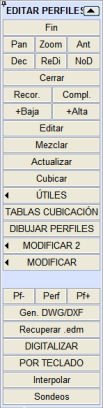Ayrıca,
GÜZERGAH PROJESİ ve YÜZEY MODELLEME modüllerinde, ENKESİT EDİTÖRÜ'ne
erişmenin faydalı olduğu birçok noktadan çağrı yapılabilir. Ayrıca P komutu (büyük harfle) ile de erişilebilir.
Enkesit editörü, enkesit dosyalarının
yönetilmesine ve içeriklerinin düzenlenmesine olanak tanıyan bir çalışma ortamı sunar.
Bu menüye girildiğinde, harita geçici olarak "park edilir" ve
mutlaka enkesit olmak zorunda olmayan özel bir düzenleme yapılır, çünkü enkesitler menüsü içinde,
açılır menüler aracılığıyla, bir enkesiti düzenlemek veya bir
sembol oluşturmak gibi başka herhangi bir kullanım için tüm düzenleme araçlarına
erişilebilir.
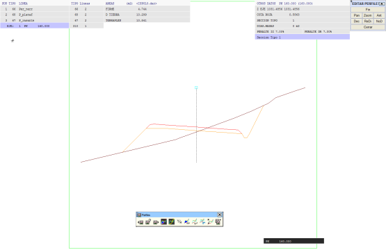
Bir enkesit dosyası kullanıcı tarafından veya ISTRAM®/ISPOL® tarafından otomatik olarak oluşturulabilir.
Bu tür bir dosya .per uzantısına sahiptir ve bir
eksen boyunca enkesit bilgilerini içerir, her enkesiti KM değeriyle
tanımlar. Her KM için içerdiği bilgi, dosyanın nerede
oluşturulduğuna bağlı olarak değişebilir, bu nedenle bir enkesit dosyasının formatı her durumda farklı olabilir.
Bir enkesit dosyası örneği, bir güzergah projesi ekseninin
tüm modelini içeren ISPOL#.per dosyalarıdır.
Genel olarak, bu tür bir dosya her KM için şunları içerir:
- Her enkesitte temsil edilen yüzey sayısı
(doğal zemin, kaya, bitkisel toprak, kazı, platform,...).
- Enkesitin alındığı noktadaki eksenin X, Y koordinatları ve semt açısı.
- Sayısal ve alfanümerik öznitelik satırları
(enkesitler
üzerindeki ölçümler, alanlar, hacimler, kullanılan kübaj tablosu,...) eğer varsa.
Örneğin, GÜZERGAH PROJESİ'nden gelen ISPOL#.per, ISFIR#.per ve CONTL#.per (burada #
eksen numarasıdır) enkesit dosyaları bu tür bilgileri içerir.
- Her bir yüzeyin enkesitlerinin
tanımı.
Bu tanım, her bir noktasının eksene olan mesafeleri ve kotu ile yapılır ve ayrıca her noktaya,
örneğin konumunu veya türünü (eksen, hendek dibi,...) belirtmek için bir
kod eklenebilir.
- Kesit tipi öznitelik olarak dahil edilir. Kesit
tanımının nereden geldiği gösterilir:
- Karayolları: Tek Platform
- Otoyollar ve Ekspres Yollar
- Demiryolları: Tek Hat
- Demiryolları: Çift Hat
- Boru Hatları: Gömülü
- Boru Hatları: Mesnetli
- Limanlar: Dalgakıran
- vb...
Her bir yüzey,
enkesitin gösterileceği çizgi tipine
karşılık gelen bir numara ile tanımlanır.
Gerçek Kesitin enkesit çizgilerini vurgulamak
için açılır menüden Görünüm
> Çizgileri Vurgula seçeneğine gidebiliriz.
Ekran sunumu sırasında, eksantrik enkesitler
durumunda konumunu daha iyi kontrol etmek için eksen konumunda dikey bir çizgi çizilir.
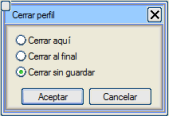Bir
enkesit dosyası açıkken, [Kapat] düğmesine basıldığında,
enkesit dosyası düzenlemesini sonlandırmak için üç seçenek sunan bir iletişim kutusu
açılır:
- Burada
Kapat: Mevcut
KM'yi çıktı dosyasına yazar ve düzenlemeyi burada sonlandırır,
bu KM'ye kadar olan tüm enkesitler o dosyada saklanır ve geri kalanı
yok sayılır.
- Sonunda
Kapat:
Düzenlemeyi sonlandırır ve çıktı dosyası, bu durumda,
mevcut KM'den bağımsız olarak hiçbirini silmeden tüm enkesitleri
içerir.
- Kaydetmeden
Kapat: Enkesit dosyasında herhangi bir değişiklik kaydetmeden editörden çıkar.
Bu varsayılan seçenektir.
Temel
İşlemler
[Kırp]
|
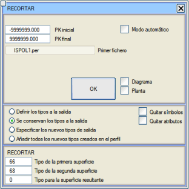Bu
düğmeye basıldığında, KIRPMA işleminin yapılacağı KM aralığını
ve işlemde yer alacak yüzey tiplerini soran bir iletişim kutusu
açılır.
A yüzeyini (ilk yüzey) B yüzeyi (ikinci yüzey) ile kırpmanın sonuç yüzeyi,
B'nin bulunduğu alanlarda A yüzeyi ile çakışan yeni bir C yüzeyidir (sonuç yüzeyi).
Sonuç yüzeyi, enkesitte zaten mevcut bir yüzey olabilir, hatta işlemde yer alan iki yüzeyden biri bile olabilir.
Bu durumlarda sonuç yüzeyi mevcut yüzeyin yerini alır ve yüzey sayısı artmaz.
Örnekler:
- Kazı çizgisi (yarma,
dolgu, tesviye yüzeyi) kırmızı kot çizgisi ile kırpılırsa, kazı çizgisinin tesviye yüzeyine karşılık gelen kısmı elde edilir.
- Arazi çizgisi kazı
çizgisi (yarma, dolgu, tesviye yüzeyi) ile kırpılırsa, işten etkilenen arazi yüzeyi elde edilir. DÜZENLE alt menüsünde, belirli bir mesafeye göre kırpmak için benzer bir işlem vardır.
|
[Tamamla]
|
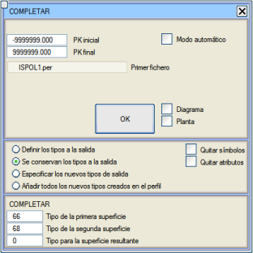Bu
düğmeye basıldığında, TAMAMLAMA işleminin yapılacağı KM aralığını
ve işlemde yer alacak yüzey tiplerini soran bir iletişim kutusu
açılır.
A yüzeyini (ilk yüzey) B yüzeyi (ikinci yüzey) ile tamamlamanın sonuç yüzeyi,
A'nın bulunduğu tüm alanlarda A yüzeyi ile ve A'nın bulunmadığı ve B'nin bulunduğu alanlarda B ile çakışan yeni bir C yüzeyidir (sonuç yüzeyi).
Sonuç yüzeyi,
enkesitte zaten mevcut bir yüzey olabilir, hatta işlemde yer alan iki yüzeyden biri bile olabilir.
Bu durumlarda sonuç yüzeyi mevcut yüzeyin yerini alır ve yüzey sayısı artmaz.
Örnekler:
- Kırmızı kot çizgisi kazı
çizgisi (yarma, dolgu, tesviye yüzeyi) ile tamamlanırsa, işten sonraki son yüzeyin çizgisi elde edilir.
- Mevcut yol çizgisi,
sağlam zemin çizgisi ile tamamlandığında, yeni bir iş için oturma yüzeyinin çizgisi elde edilecektir.
Kodlu bir yüzeyi kodsuz bir yüzeyle
tamamlarken, ikinci yüzey önceden 5001'den başlayan veya ilk yüzeyin en büyük kodu 5001'den büyükse o koddan başlayan kodlarla yeniden kodlanır.
|
[En Düşük]
|
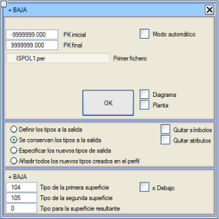Bu düğmeye basıldığında, yine öncekilere benzer bir
iletişim kutusu açılır.
Bu durumda, A ve B yüzeyleri arasındaki en düşük yüzey, A ve B'nin aynı anda var olduğu yerlerde veriye sahip olan ve bu durumda en düşük olanla çakışan yeni bir C yüzeyidir.
x Altında kutucuğu etkinleştirilirse, sonuç yüzeyi yalnızca ilk yüzeyin ikinci yüzeyin altında kalan kısmıdır.
Sonuç yüzeyi,
enkesitte zaten mevcut bir yüzey olabilir, hatta işlemde yer alan iki yüzeyden biri bile olabilir.
Bu durumlarda sonuç yüzeyi mevcut yüzeyin yerini alır ve yüzey sayısı artmaz.
|
[En Yüksek]
|
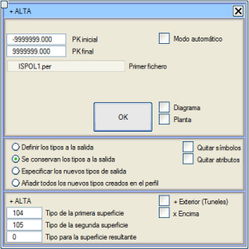Yine aynı yapıya sahip bir iletişim kutusu açılır.
A ve B yüzeyleri arasındaki en yüksek yüzey, sadece A ve B'nin aynı anda var olduğu yerlerde veriye sahip olan ve en yüksek olanla çakışan yeni bir
yüzey C'dir.
Tüneller üzerindeki yüzeyler için
+ Dış (Tüneller) seçeneği etkinleştirilebilir.
Bu durumda en yüksek yüzey, açı-yarıçap alanında belirlenir, böylece sonuç yüzeyi (daha büyük yarıçap) ikisinin dış zarf yüzeyi olur (açı ve
yarıçap değerleri, iki yüzeyin çevreleyen dikdörtgeninin merkezi olarak hesaplanan bir iç noktadan belirlenir).
x Üstünde kutucuğu etkinleştirilirse, sonuç yüzeyi yalnızca
ilk yüzeyin ikinci yüzeyin üzerinde kalan kısmıdır.
Sonuç yüzeyi,
enkesitte zaten mevcut bir yüzey olabilir, hatta işlemde yer alan iki yüzeyden biri bile olabilir.
Bu durumlarda sonuç yüzeyi mevcut yüzeyin yerini alır ve yüzey sayısı artmaz.
|
| [Düzenle]
|
Bir .per
dosyasından her KM'de bulunan tüm yüzeyleri
çıkarmayı ve bunları grafiksel ve interaktif olarak değiştirmeyi, ardından değiştirilmiş
enkesitlerle aynı formatta yeni bir çıktı dosyası oluşturmayı sağlar. Bu çıktı dosyası,
girdi dosyasıyla aynı ada veya farklı bir ada sahip olabilir.
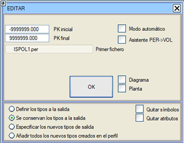
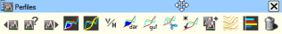Bir
enkesit dosyası yüklendikten sonra ve kullanıcının belirlediği yapılandırmaya bağlı olarak,
kullanıcının enkesitleri
istediği gibi değiştirebilmesi için çizgi düzenleme araç
çubuğu da görünebilir. Ayrıca, aşağıdaki işlevlere sahip enkesit
düzenleme araç çubuğu
da görünür:

|
Önceki enkesite (KM) git.
Bu seçenek mevcut enkesitten çıkar, onu çıktı dosyasına
yazar ve bir öncekini düzenlemeye geçer. Mevcut KM, dosyanın ilk
KM'si veya önceden ayarlanmış başlangıç KM'si olduğunda, editör o
enkesitte kalır. Klavyedeki <PageUp> tuşu aynı
etkiyi yaratır.
Dizüstü bilgisayarlarda kullanımı kolaylaştırmak için, bazı klavye düzenleri nedeniyle, PageUp'a eşdeğer olarak Ctrl + <- kombinasyonuna sahibiz.
|

|
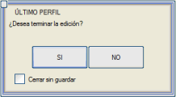Belirli
bir enkesite (KM) git.
Bu seçenek mevcut enkesitten çıkar, onu çıktı dosyasına
yazar ve düzenlenmek istenen enkesitin KM'sini sorar. Girilen KM,
dosyadaki son KM'den büyük olduğunda, enkesit düzenlemesini sonlandırmak isteyip istemediğinizi
soran bir iletişim kutusu açılır. Eğer küçükse, editör en başa yerleşir.
|

|
Sonraki enkesite (KM) git.
Bu seçenek mevcut enkesitten çıkar, onu çıktı dosyasına
yazar ve bir sonrakini düzenlemeye geçer. Mevcut KM, dosyanın son
KM'si veya önceden ayarlanmış bitiş KM'si olduğunda, seçenek
otomatik olarak önceki iletişim kutusunu gösterir. Klavyedeki
<PageDown> tuşu
aynı etkiyi yaratır.
Dizüstü bilgisayarlarda kullanımı kolaylaştırmak için, bazı klavye düzenleri nedeniyle, PageDown'a eşdeğer olarak Ctrl + -> kombinasyonuna sahibiz.
|

|
Alanı Göster. Bu
seçenek, düzenlenmekte olan enkesit dosyası bir .dar tablosu ile kübajı yapıldığında çok kullanışlıdır,
çünkü mevcut enkesitteki farklı ölçümleri bir düğme şeklinde
gösterir, böylece birine tıklandığında ilgili alan taranır. Ayrıca, o
pencerenin başlığında kullanılan ölçüm tablosu gösterilir.
"Enkesit alanları" aracıyla bir alan vurgulandığında ve önceki veya sonraki enkesite geçildiğinde, seçilen alan vurgulanmış olarak kalır.
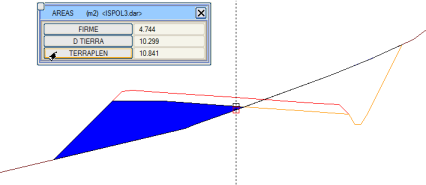
Bu düğmeye basıldığında, enkesit belirtilen tabloyla yeniden ölçülür.
Belirtilen bir tablo yoksa, ISPOL4.dar ile ölçülür.
|

|
Bir çizgiyi vurgula.
Bu araç, enkesitin belirli bir yüzeyini vurgulamayı sağlar.
Etkinleştirildiğinde, projede kullanılan tüm çizgi tiplerini gösteren bir iletişim kutusu belirir ve ayrıca mevcut enkesitte her tipten kaç çizgi olduğunu gösterir.
|

|
Dikey/Yatay ölçek oranını değiştir. Bu oran, Sescav klavye komutuyla da değiştirilebilir.
|

|
.dar tablolarının oluşturulması/değiştirilmesi sırasında kullanılacak model enkesiti oluştur. Bu seçenek,
çalışma kütüphanesinde, mevcut enkesiti içeren bir defArea.per dosyası
oluşturur. Bu enkesit, [KÜBAJ TABLOLARI] menüsünden,
kübaj tablosunun satırlarından (verilerinden) birinin yürüttüğü ölçümü görmek istendiğinde, programın kütüphanesinde bulunan standart dosya yerine
kullanılacaktır.
Kübaj tablosunun tasarımını kontrol etmek için on farklı defArea.per arasında gezinmeye izin verilir.
defArea.per dosyaları, Enkesit Düzenleme araç çubuğundaki bu düğme aracılığıyla ardışık olarak kaydedilir.
|

|
Enkesit paftaları için .gut şablonlarının oluşturulması/değiştirilmesi sırasında kullanılacak model enkesiti oluştur. Bu seçenek, mevcut enkesiti, enkesitler için gitar oluşturma ve düzenleme menüsünde model olarak kullanılan ISPOL.per
kütüphane dosyasına kaydeder.
|

|
Enkesiti Kırp. Bu,
kırpma işlemidir,
ancak enkesit dosyası düzenlenirken mevcut enkesite interaktif olarak uygulanır.
|

|
Enkesiti Tamamla. Bu,
tamamlama işlemidir,
ancak enkesit dosyası düzenlenirken mevcut enkesite interaktif olarak uygulanır.
|

|
Enkesiti Birleştir.
Bu araç, belirli bir KM'de, aynı eksenin başka bir enkesit dosyasından gelen bir veya daha fazla
yüzeyi birleştirmeyi sağlar. Program, bu ikinci dosyada bulunan
yüzeyleri gösterir, tekrarlanıp tekrarlanmadıklarını belirtir ve birleştirmeyi yapmadan önce
tiplerini değiştirme imkanı sunar. Eğer birleştirilen yüzey zaten mevcutsa,
orijinalin üzerine yazılır ve kopyalanmaz.
|

|
Enkesitin plan görünümünü göster/gizle.
|

|
Enkesit dosyasının yüzey diyagramını göster/gizle.
|

|
Mevcut enkesiti sil.
Bir enkesit silindiğinde, editör bir sonraki enkesite atlar.
|
|
Mevcut KM'ye kadar kaydet.
Yapılan değişiklikleri mevcut KM'ye kadar yeni bir dosyaya kaydeder.
|
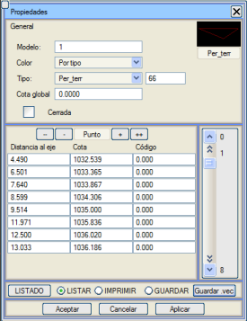Eğer
bir enkesit çizgisi, üzerine çift tıklayarak veya
sağ fare düğmesiyle açılan bağlam menüsündeki Özellikler
seçeneği aracılığıyla düzenlenirse, tipik çizgi özellikleri kutusuna ek olarak,
seçilen çizgiyi bir "üretici vektör" tipi dosyasına kaydeden [.vec Kaydet] seçeneği de belirir.
Enkesit düzenleme işlemlerinde,
ekranda görünen koordinat sistemi şöyledir:
X → Eksene olan
mesafeler
Y → Kotlar
Z → Nokta kodu
Bir enkesit dosyasıyla
belirli işlemleri düzenlerken veya gerçekleştirirken, yüzeyler
diyagramının gösterimi etkinleştirilebilir. Diyagram
etkinleştirildiğinde, diyagramın başlangıç KM'sini sayısal olarak veya ilgili
kaydırıcıyı kullanarak düzenleyerek enkesitler arasında ileri/geri gidilebilir.
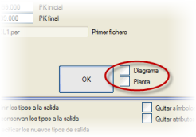
Bu diyagram, enkesit dosyasında bulunan
farklı çizgi tiplerinin hangi KM'lerde mevcut olduğunu gösterme işlevine sahiptir, bu da
örneğin güzergah projesi takip dosyalarında özellikle kullanışlıdır:
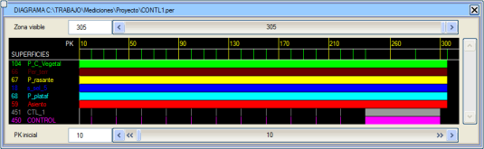
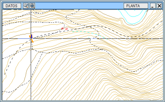Ayrıca
plan görünümünü etkinleştirmek de mümkündür,
bu da enkesitin harita üzerindeki konumunun gösterilmesini sağlar.
Bu plan görünümüne farenin ana düğmesiyle tıklandığında,
program belirtilen KM'ye en yakın enkesite gider (yakınlaştırma veya kaydırma simgesi basılı olmadığı sürece).
İmleç enkesit üzerinde hareket ettirildiğinde,
plan penceresinde imlecin gerçek konumunun bir yansıması gösterilir.
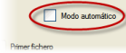Bir
veya bir çift enkesit dosyası üzerinde iki çalışma modu
vardır:
- İnteraktif:
Bu modda, çoğu işlemde varsayılan olarak ayarlanmıştır,
dosya veya dosyalardaki her enkesitte bulunan farklı yüzeylerin grafik bilgileri ekrana
yansıtılır, böylece kullanıcı bir sonraki KM'ye geçmeden önce bunları grafiksel olarak
değiştirebilir.
- Otomatik:
Bu seçenek etkinleştirilirse, program dosya veya dosyalardaki
tüm KM'leri tek tek dolaşır ve önceden ayarlanmış işlemi
durmadan uygular, ancak her bir
enkesit ekranda çok hızlı bir şekilde gösterilir.
|
[Düzenle],
[Kırp],
[Tamamla],
[En Düşük]
ve [En Yüksek] seçeneklerine girildiğinde,
çıktı dosyası, girdi dosyasının yalnızca bazı yüzeylerini veya interaktif olarak
ya da burada açıklanan işlemlerle oluşturulmuş yeni yüzeyleri içerebilir. Örneğin,
[Düzenle] seçeneği seçildiğinde,
program aşağıdaki iletişim kutusunu açacaktır:
|
|
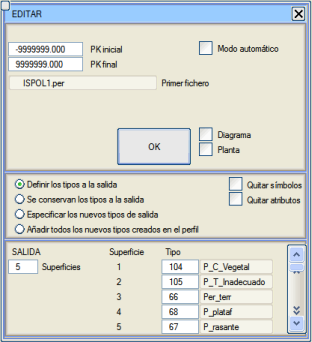 |
Eğer Çıktıda tipler korunur seçeneği aktif bırakılırsa, mevcut tüm yüzeyler
dosya kaydedilirken korunacaktır.
|
|
Eğer Çıktı tiplerini tanımla seçeneği aktif bırakılırsa, mevcut yüzeyler
üzerinde işlem yapma imkanıyla birlikte gösterilir.
|
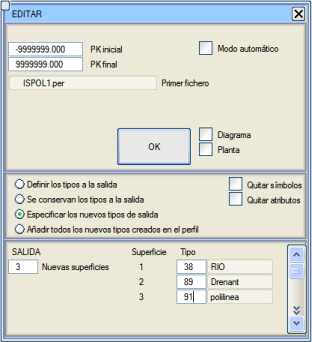
|
|
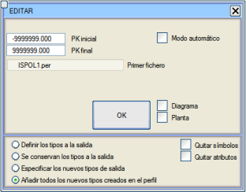
|
Eğer Yeni çıktı tiplerini belirt seçeneği aktif bırakılırsa,
mevcut ve KM'den KM'ye değişebilen yüzeyler hakkında endişelenmeden,
enkesitlere yeni yüzeyler eklemeye olanak tanır.
Eklenecek yeni yüzeylerin sayısını belirtmek ve
ardından tiplerini belirtmek yeterlidir. Değiştirilmiş dosyada sadece
düzenleme sırasında oluşturulmuş YENİ tiplerdeki eklenen çizgiler ve
zaten mevcut olan bilgiler kaydedilecektir.
Yani, bir enkesit dosyasında örneğin 60 numaralı çizgi tipi varsa ama tüm enkesitlerde yoksa, bu tiple bir çizgi oluşturulursa, var olmadığı bir enkesitte, bu çizgi KAYDEDİLMEZ.
|
|
Eğer
seçilen seçenek Enkesitte oluşturulan tüm yeni tipleri ekle ise,
o zaman editör, üzerine çizilen çizgilerden enkesit için yeni yüzeyleri otomatik olarak tanıyacaktır.
Öncekinden farklı olarak, hangi tiplerin yeni olacağını belirtmek gerekmez ve ayrıca,
yeni bir tip olup olmadığına bakılmaksızın, enkesitlere eklenen tüm yeni çizgiler
kaydedilecektir.
|
 PER>VOL Asistanı:
.per dosyasını .vol boykesit dosyalarına dönüştürme seçenekleriyle .per dosyasına erişim sağlar.
Bununla, boykesitin genişlikler, deverler, yardımcı platformlar gibi belirli menülerine değerler verilebilir. PER>VOL Asistanı:
.per dosyasını .vol boykesit dosyalarına dönüştürme seçenekleriyle .per dosyasına erişim sağlar.
Bununla, boykesitin genişlikler, deverler, yardımcı platformlar gibi belirli menülerine değerler verilebilir.
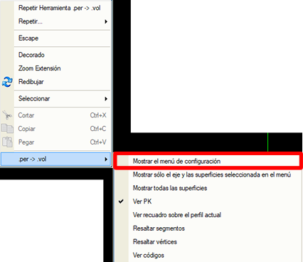
KM'ye Göre Yarma Vektörleri Sekmesi:
İletişim kutusunda, yarma vektörlerini elde etmek ve bir .vdp dosyası oluşturmak için gerekli parametreler bulunur.
Sadece bir yüzey ve yarma vektörünün elde edileceği kodları seçmek yeterlidir.
. 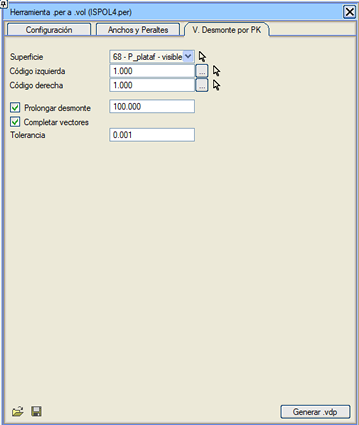
Ayrıca, Sembolleri kaldır
ve Öznitelikleri kaldır kutucuklarını işaretleyerek dosyadaki tüm sembollerin ve
sayısal ve alfanümerik özniteliklerin silinmesi de belirtilebilir.

|
Enkesit
düzenlemesi sırasında, enkesitte bulunan çizgi veya sembol tiplerinden herhangi biri devre dışı bırakılmışsa bir uyarı gösterilir. |
Enkesit dosyalarıyla diğer temel işlemler şunlardır:
[Birleştir]
|
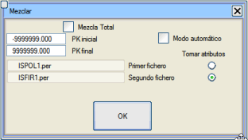Her
KM için, birleştirilen iki .per
dosyasında bulunan yüzeyleri içeren yeni bir enkesit dosyası
oluşturmayı sağlar.
Aşağıda görünen iletişim kutusunda Tam birleştirme kutucuğu
etkinleştirilmezse, çıktı dosyasında yalnızca her iki girdi dosyasının (A ve B) da veri
içerdiği enkesitler oluşturulur.
Aksine, bu kutucuk etkinleştirilirse program aşağıdaki gibi davranır:
- A ve B enkesitlerinin bulunduğu KM'lerde,
A yüzeyleri artı B yüzeyleri ile bir enkesit
oluşturur (temel BİRLEŞTİRME seçeneği gibi).
- Sadece A'nın bulunduğu KM'lerde, A yüzeyleri ile bir enkesit
oluşturur.
- Sadece B'nin bulunduğu KM'lerde, B yüzeyleri ile bir enkesit
oluşturur.
Çıktı dosyasının yüzey sayısı, girdi dosyalarının yüzeylerinin toplamıdır.
Bu seçenek, semboller, alfanümerik öznitelikler, ölçümler vb. içeren enkesit dosyalarını da destekler, ancak özniteliklerin hangi iki dosyadan alınacağını kullanıcının belirtmesi gerekir (Öznitelikleri
al seçeneği).
|
[Güncelle]
|
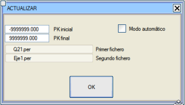Aynı
sayıda yüzey içerdiği varsayılan iki girdi dosyasından güncellenmiş
bir enkesit dosyası oluşturur.
Bu seçeneğe tıklandığında, her iki dosya da istenir ve işlemi aralıklara bölmenin mümkün olduğu bir iletişim kutusu açılır.
Eğer seçilen ilk dosya A ve ikincisi B ise, çıktıda
aşağıdaki enkesitler elde edilecektir:
- Sadece A verilerinin bulunduğu KM'lerde, A'nın enkesitleri
kaydedilecektir.
- Sadece B verilerinin bulunduğu KM'lerde, B'nin enkesitleri
kaydedilecektir.
- Her iki dosyanın da veri içerdiği KM'lerde, B'nin enkesitleri
kaydedilecektir.
Bu seçenek, semboller, alfanümerik öznitelikler, ölçümler vb. içeren enkesit dosyalarını da destekler.
|
[Kübaj Hesabı]
|
En
az iki yüzey içeren bir dosya yüklemeyi ve herhangi
iki yüzey arasında bir kübaj hesabı yapmayı sağlar, yarma ve dolgudaki alanların,
kısmi ve birikimli hacimlerin bir listesini (cubica.res/cubica.xlsx) oluşturur.
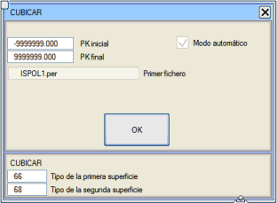Bu
sefer açılan iletişim kutusu, kübajı yapılacak dosyayı belirttikten sonra,
işlemi aralıklara bölmeye olanak tanır ve ayrıca kübajın hangi yüzeyler arasında
yapılacağını sorar.
Eğer enkesit dosyası interaktif olarak düzenlenmişse,
kübaj, yapılmış olan tüm grafiksel değişiklikleri
dikkate alır.
Kübaj yapıldıktan sonra liste otomatik olarak gösterilecektir.
Kübaj işlemi bittiğinde, cubicar.dar
adında bir kübaj tablosu oluşturulmuş olacaktır. Bu tablo aracılığıyla enkesitlerdeki ölçümler kontrol edilebilir.
|
ENKESİTLERİ ÇİZ
|
Enkesit
çizim menüsüne erişim sağlar.
|
DWG/DXF Oluştur
|
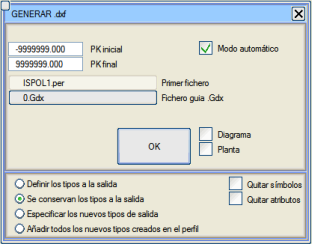Her
biri bir
enkesit içeren bir dizi .dwg/.dxf formatında dosya
dışa aktarır.
.gdx uzantılı bir dosyayla ilişkilendirilmiş bir liste, listenin oluşturulmasını ve
içe aktarılmasını koordine eder.
Bu seçenek artık kullanılmamaktadır.
|
.edm Geri Yükle
|
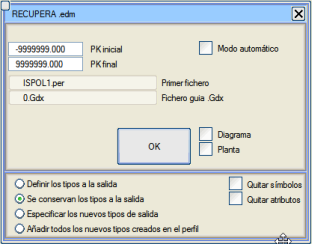DWG/DXF
formatındaki, düzenlenmiş veya düzenlenmemiş dosya serisi, harici format dönüştürücü dxfedm kullanılarak EDM formatına dönüştürülmelidir.
dxf.bat adında döngüsel bir otomatik yürütme betiği kullanılması
tavsiye edilir.
Dönüşüm sırasında ilgili yüzey anahtarlarını atayan bir dxf.cod sözlük dosyasının bulunması
gereklidir.
İşlem, bir kılavuz enkesit dosyası (genellikle önceki seçenekle dışa aktarılan orijinal dosya) ve
daha önce oluşturulan .gdx dosyasının
adını sorar. Bu ikisini ve kök adı .gdx dosyasında
listelenen .edm dosya serisini
kullanarak,
tüm seriyi içeren yeni bir enkesit dosyası elde edilerek içe aktarma
gerçekleştirilir. Bu dosyalar, 67 ve 68 numaralı yüzeylerin noktalarında kodların olmaması dışında orijinallere benzer.
Bu seçenek artık kullanılmamaktadır.
|
SAYISALLAŞTIR
|
Herhangi
bir KM'de, ilgili enkesitlerin sayısallaştırıcı tablet veya masa üzerinde
sayısallaştırılması yoluyla yüzeylere yeni veriler girmeyi sağlar.
Burada pafta ayarı ve sayısallaştırma için koordinatların şunlar olduğu dikkate alınmalıdır:
X → Eksene olan
mesafe
Y → Kot
|
KLAVYEDEN GİRİŞ
|
Arazi
enkesitlerinin klavyeden manuel olarak girilmesine olanak tanır.
Bu seçenek seçildiğinde, program mevcut bir dosyayla devam etmek mi yoksa yeni bir tane oluşturmak mı istendiğini sorar.
Mevcut bir dosyayla devam etmek istenirse, program girilen son enkesitten sonraki
KM'ye yerleşir. Yeni bir tane seçilirse,
program eksen numarasını sorar ve eğer bu eksene ait bir cpun.res dosyası varsa,
eksen noktalarının koordinatlarını ve semt açısını, KM'lerin eşit aralığını koruyarak
enkesit dosyasına ekler.
Eksen boyunca ilerlerken enkesitleri doldurmayı sağlayan iletişim kutusu, aşağıdaki seçenekleri sunar:
- Çiz:
Düzenlenmekte olan enkesiti ekranda gösterir.
- Sonraki:
Mevcut enkesiti depolayarak bir sonraki enkesite geçer.
- Son:
Mevcut enkesitin son olduğunu belirtir, mevcut enkesitin oluşturulmasını tamamlar ve enkesit dosyasını kapatır.
- Enkesiti
Ters Çevir (
[SOL <x> SAĞ]) düğmesi, sağdaki verileri soldakilerle ve tam tersi şekilde değiştirir.
- Eksende
Kes:
Bir sonraki enkesite geçmeden önce kullanılır, verileri
negatif mesafelerle yeniden düzenler ve gerekirse orta noktayı enterpole ederek enkesiti eksende keser.
- KM:
Mevcut enkesitin KM'sini değiştirir, XP, YP ve AZ
değerlerini yeni noktaya göre yeniden hesaplar. Eğer bir önceki enkesitten daha küçük bir KM verilirse,
mevcut enkesit eklenmez, bunun yerine [Sonraki] veya [Son] komutları yürütüldüğünde KM'sine göre uygun pozisyona eklenir. Eğer
yazılan KM zaten bir önceki enkesitte mevcutsa, o enkesit
yeni verilerle güncellenir.
- Ekle:
İlgili yarı-enkesite bir veri ekler.
Enkesitler daha sonra [Düzenle] seçeneği ile yüklenerek düzenlenebilir.
|
İnterpolasyon
|
Seçilen
enkesit dosyasının enterpole edilmiş bir enkesitini hesaplar ve bunu
orijinal enkesit dosyasının ilgili KM'sine ekler. Veriler,
istenenin önceki ve sonraki enkesitidir. Bu aynı işlem, GÜZERGAH PROJESİ modülündeki BOYKESİT menüsünün hesaplamalarından otomatik olarak yürütülür.
|
Boykesit menüsünden enkesitlerin dinamik düzenlemesinde, [ST.per] seçeneğinin yanında bir simge bulunur. Bu simge, bu dosyayı anında oluşturup düzenlemeyi sağlar. Yani, kesit penceresindeki mevcut enkesiti düzenlemeye olanak tanır.
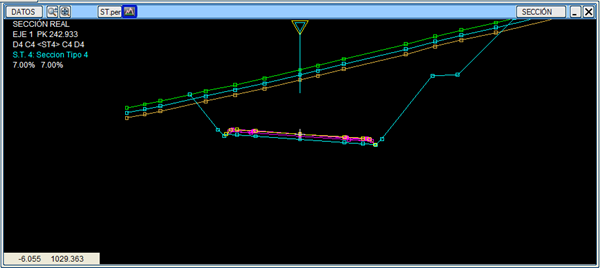
Yardımcı Araçlar
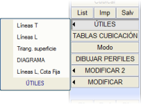[YARDIMCI ARAÇLAR]
menüsü altında aşağıdaki araçlar gruplandırılmıştır:
- Enkesit
Çizgileri (T Çizgileri): Bir .per dosyasında bulunan bir yüzeyin enkesitlerini,
gerçek konumlarında (X,Y,Z) plan üzerine yerleştirir.
Planda düz çizgilerdir, ancak çoklu doğrunun kabartması vardır.
Kullanılan çizgi tipi, geldikleri yüzeyin tipiyle aynıdır (ayrıca Tümü
kutucuğu etkinleştirilirse, enkesitin tüm yüzeyleri için aynı anda işlem yapılır).
Bu enkesit grubunu içeren harita, bir .edm
dosyasına kaydedilebilir,
böylece daha sonra plan üzerinde düzenlenebilir, örneğin,
üçgenlemek ve eş yükselti eğrileri, yeni enkesitler vb. çıkarmak için.
- Boykesit Çizgileri (L Çizgileri):
Belirli bir yüzeyin her bir enkesitinin eşdeğer noktalarını (köşe noktalarını) bir aralıkta
birleştirerek oluşturulan boykesit çizgilerini plan haritasına aktarır. Bu işlem aşağıdaki
kriterlerden birine göre yapılır:
- 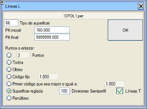Eksenden
itibaren her iki taraftaki ilk i
adet köşe noktası, burada i dikkate alınacak
köşe noktası sayısıdır.
- Yüzeyin tüm köşe noktaları.
- Dikkate alınan yüzeyin her iki tarafındaki
uç (son) köşe noktası.
- Kullanıcı
tarafından belirtilen bir koda karşılık gelenler.
Örneğin, GÜZERGAH PROJESİ'nden gelen bir enkesit dosyasında kod 2 belirtilirse,
ana platform kenarlarına (çift platform durumunda dış kenarlar) karşılık gelen iki
3B çizgi içeren bir plan elde edilir.
- Belirtilenden
büyük veya ona eşit bulduğu ilk kod
(yani, örneğin kod 99'u bulamazsa 100 veya 600 ile birleştirebilir).
- Her enkesitte aynı sayıda
bölümleme yaparak bir regle yüzey.
- Dikkate alınan yüzeyin her iki tarafındaki sondan bir önceki köşe noktası.
- Sabit kotta boykesit çizgileri:
Arazi yüzeyleri hariç, ISPOL.per tipi
bir enkesit dizisiyle tanımlanan yüzeylerden sabit bir kotta bir kesit
çıkarır.
Enkesit
dosyalarında değişiklik yapmak için alt menüler
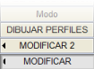[DÜZENLE] ve [DÜZENLE 2] alt menüleri,
enkesit dosyalarında saklanan öznitelikler üzerinde bir dizi işlem yapmayı sağlar.
Sonuç, bir KM aralığıyla sınırlandırılabilir ve aynı girdi dosyasında veya farklı bir dosyada saklanabilir.
Düzenle
Yüzey Tipi
|
Seçilen
enkesit dosyasının mevcut yüzeylerinden herhangi birinin tipini
değiştirmeyi sağlar.
|
Yüzey Kotu
|
Bir
yüzeyin tüm noktalarının kotlarına sabit bir miktar
ekler.
Eğer kotu değiştirilmek istenen yüzey, mevcut bir platformun
tesviye yüzeyi (L102) ise, program mevcut platformun yüzeylerinin
uçlarını ve iyileştirme kenarlarını da değiştirmek isteyip istemediğinizi sorar.
Aralıklara göre filtreleme yapabilir ve birden fazla yüzey seçebilirsiniz.
Herhangi bir aralık eklenmezse, dosyadaki tüm enkesitler işlenir.
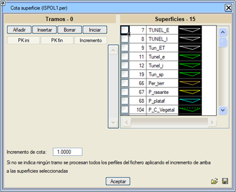
İletişim kutusunda tanımlanan aralıkları kaydetmek ve yüklemek mümkündür.
|
Paralel Ekle
|
Belirli
bir tipte ve mevcut bir yüzeye paralel bir yüzey oluşturur.
Üç olası mod vardır:
- Dikey
öteleme: Paralel, kaynak yüzeyin her köşe noktasının
kot artışından oluşturulur.
- Gerçek
paralel:
Kaynak yüzeyin her segmentine belirtilen mesafede bir paralel
oluşturur ve bu segmentleri birbirleriyle kesişene kadar uzatır.
- Radyal:
Bir tünel kazısı gibi, enkesit eksenine merkezlenmiş
kapalı yüzeyler için kullanışlıdır. Bu modda, enkesit ekseninde,
her yarı-enkesitin ilk ve son noktası arasındaki ortalama kotla bir nokta belirlenir.
Bu merkezle, yüzeyin her bir noktasına yarıçaplar çizilir ve konumu bu yarıçap boyunca
belirtilen mesafede kaydırılır.
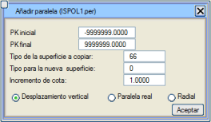
|
Yüzey Sil
|
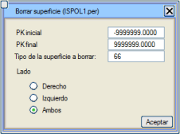Bir
enkesit dosyasından bir yüzeyi siler ve eksenin hangi tarafının
silineceğini seçme imkanı sunar.
|
Eksen Numarası
|
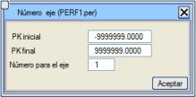Bir .per dosyasının ait olduğu eksen numarasını
değiştirir.
|
Ekseni Projelendir
|
Bir
eksenin enkesit dosyasını başka bir eksene yansıtır. Bu,
bir eksene referansla alınmış arazi enkesitleri dosyası olduğunda ve proje sırasında
planda küçük değişiklikler (bir kurp yarıçapını artırmak,
bir doğruyu yanal olarak kaydırmak vb.) yaparak güzergahı değiştirmek istendiğinde kullanışlıdır.
Enkesitlerin konumu değişir ve değişiklik bölgesinden sonraki her enkesitin KM ataması
değiştirilmelidir. Değişiklikler "küçük" semt açısı değişiklikleri içerdiğinde de aynı
enkesitler kabul edilebilir.
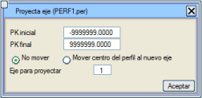Bu
seçenek, her enkesiti yeni eksene yansıtır, yeni KM'yi ve
yeni enkesit merkezini hesaplar ve ona yeni eksen üzerindeki semt açısını atar.
Kullanıcı, bu yansıtmanın "makul ölçüde" hassas enkesitlere
yol açması için değişikliklerin yeterince
"küçük" olup olmadığını kontrol etmelidir.
Ayrıca, enkesitleri yanal olarak kaydırma, eksene olan mesafe ve
kotun sayısal değerlerini koruyarak merkezlerini başka bir konuma taşıma
imkanı da sunulur. Bu işlem, her enkesitin merkezinin koordinatlarının yakalanmasında,
örneğin UTM projeksiyonunu dikkate almamak, daha az hassas bir alet kullanmak gibi küçük bir hata olduğunda
gereklidir.
Seçenek, sembollü enkesitlere izin verir. Ayrıca, KM'leri ters yönde ilerleyen bir eksenin enkesitlerini başka bir eksene yansıtmak da mümkündür.
Bu durumda, program önce enkesitlerin sırasını tersine çevirir,
sağ tarafı solla değiştirir, semt açısını döndürür ve
KM'leri işaretlerini değiştirerek yeniden numaralandırır.
|
Sembol Ekle
|
 Enkesitleri
sembollerle süslemeyi sağlar. Enkesitler,
daha sonra onlarla çizilmek üzere, enkesitin belirli elemanlarına referansla
yerleştirilen sembol serilerini kabul eder; hendek altı drenleri, güvenlik bariyerleri, direkler vb. gibi.
Enkesitler demiryollarına ait olduğunda, zaten travers ve raylara
karşılık gelen sembol serileri içerirler. Burada katener için
direkler eklenebilir,... Enkesitleri
sembollerle süslemeyi sağlar. Enkesitler,
daha sonra onlarla çizilmek üzere, enkesitin belirli elemanlarına referansla
yerleştirilen sembol serilerini kabul eder; hendek altı drenleri, güvenlik bariyerleri, direkler vb. gibi.
Enkesitler demiryollarına ait olduğunda, zaten travers ve raylara
karşılık gelen sembol serileri içerirler. Burada katener için
direkler eklenebilir,...
Benzer bir seçenek, GÜZERGAH PROJESİ modülü içinde BOYKESİT →
ENKESİTLER → [ENKESİT SEMBOLLERİ]
menüsünde komut tablosu şeklinde de mevcuttur.
|
Eksene Göre Kes
|
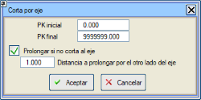Enkesitlerle
yapılan bazı işlemler, yanal olarak kaydırılmış, birleştirilmiş veya "elle" taşınmış enkesitlere yol açar, bu da
hassas hacim hesaplamaları veya [Tamamla] gibi işlemlerin uygulanması için uygun olmaz.
Bu işlem, bir enkesitin birkaç parçasını birleştirir ve kesimi eksen üzerine yerleştirir.
Bu araç, yarı-enkesitlerden birinin veya her ikisinin
verilerinin ters çevrilip çevrilmediğini önceden analiz eder ve bu durumu düzeltir.
Yarı-enkesitlerin yüzeyleri, eksenden
dışarıya doğru bir yöne sahip olmalıdır.
Eğer [
] Ekseni kesmezse uzat seçeneği etkinleştirilirse, enkesiti
eksenin diğer tarafından uzatacaktır.
|
Uzat / Kırp
|
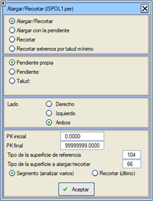Bir yüzeyi, başka birini referans olarak kullanarak otomatik olarak
uzatır veya kırpar.
Bu seçenek, belirli arazi enkesitleriyle yapılmış bir projenin,
değişikliğinin başlangıçtakilere göre küçük farklılıklar içeren
başkalarının aplikasyonunu gerektirdiği durumlar için tasarlanmıştır. Eski yüzey
yeniyle değiştirilir ve bu işlemle şevler yeni duruma
ayarlanır.
Benzer bir durum, maden ocaklarının takibi sırasında,
kısmi aplikasyonların kenarlarda tam olarak uyuşmadığında ortaya çıkar.
Algoritmanın düzgün çalışması için farklılıkların küçük olması gerekir,
çünkü sadece enkesitin son segmenti üzerinde işlem yapılır.
Yarı-enkesitlerin her birinin ilk noktası eksenle çakışmazsa,
bir uzatma/kırpma da yapılır.
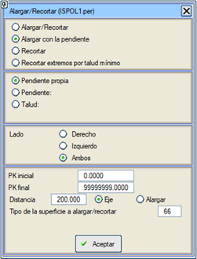Eğimle uzat
(kendi eğimi, eğim veya şev) seçeneği için, eğer enkesitin
gerekli tarafta noktası yoksa, diğer tarafın ilk iç segmentinden
ekstrapolasyon yapılır.
Yüzeyi
kırpma durumunda, sadece yüzeyin
son segmentinin mi dikkate alınacağı yoksa
birden fazla segmentin silinmesine izin verilip verilmeyeceği belirtilmelidir.
Eğer referans yüzey olarak uzatılmak/kırpılmak istenen yüzeyin
kendisi verilirse ve ayrıca sadece son
segment dikkate alınırsa,
o zaman program yüzeyin
her iki tarafından son segmenti siler.
İletişim kutusu ayrıca, yüzeyi son bölümün
eğimine göre ve belirli bir
eksen mesafesine kadar uzatma imkanı da sunar.
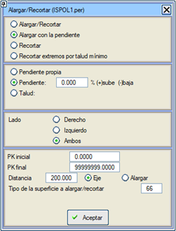Kendi
eğimiyle veya önceden tanımlanmış
bir eğim veya şevle uzatılabilir. Bu durumlarda,
referans yüzeyin
değiştirilecek yüzeye göre konumuna bağlı olarak
yükselen, alçalan veya otomatik işaretli bir
eğim veya şev sabitlenebilir.
|
| 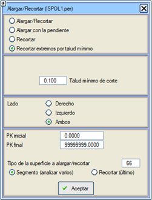Uçları minimum şeve göre kırp:
enkesitin uçlarından, yarmada seçilen zeminin kapanışı gibi çok dik şevleri
kaldırmaya olanak tanır, böylece bu yüzeylerin bu segmentler olmadan
daha sonra işlenmesi sağlanır, |
| Şev alanı, yarma ve dolgu şevi olarak ayrılmıştır.
|
Ötele/Kaydır
|
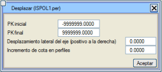Bir
dosyanın enkesitlerini bir aralıkta (KM ile verilen) sağa veya
sola ve kot olarak kaydırır.
Seçenek, aralıktaki tüm enkesitler için aynı ötelemeyi (yanal ve
kot olarak) uygulama veya sadece bir .pkd dosyasına göre değişken bir yanal öteleme uygulama arasında seçim yapma imkanı sunar.
Bu araç, sembol içeren enkesit dosyalarıyla da çalışır.
|
| Koda Göre G/İ |
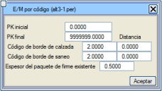Bir
arazi enkesit dosyasını bir genişletme ve iyileştirme enkesit dosyasına
dönüştürür.
Bunun için orijinal yüzeyin, mevcut platformun kenar işaretleri olarak
kullanılabilecek kodlarla işaretlenmiş olması gerekir. Belirli bir
durum, genişletme ve iyileştirme için işaretleri olan diğer
programlardan arazi enkesitlerinin içe aktarılmasıdır.
Bu komut seçildiğinde, program platform kenarı kodunu,
iyileştirme kenarı kodunu, bu kodlara bir mesafeyi ve mevcut
üstyapı katmanının kalınlığını sorar, ardından mevcut olanı kopyalayarak oluşturulan tüm yüzeylerle yeni bir enkesit dosyası oluşturur.
|
Düzenlileştir
|
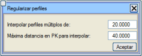Herhangi
bir KM'de alınmış bir enkesit dosyasını, KM'leri
belirli bir değerin katları olan enkesitlere sahip başka bir dosyaya
dönüştürmeyi sağlar.
Yeni enkesitler, en yakın iki enkesit arasında ve enterpolasyon için
maksimum mesafeyi dikkate alarak enterpole edilir.
Seçeneğin doğru çalışması için, her yeni KM'ye karşılık gelen koordinatları ve semt açısını bilmek amacıyla enkesitlerin plan ekseninin hesaplanmış olması gerekir.
Çıktı dosyası, ilk enkesiti, sonuncusunu ve arada
verilen değerin veya eşit aralığın tüm katlarını içerir.
Aşağıda 20'nin katlarına göre bir düzenlileştirme örneği gösterilmektedir:
Orijinal:
|
12.35 |
18.3 |
44.2 |
89.3 |
111.0 |
147.85 |
|
|
|
Sonuç:
|
12.35
|
20.0 |
40.0 |
60.0 |
80.0 |
100.0 |
120.0 |
140.0 |
147.85 |
Bu seçenek, öznitelikleri, bu KM'ler
orijinal dosyada mevcutsa, düzenlileştirilmiş KM'lere aktarır (enterpole edilmiş KM'ler için
öznitelikler silinir).
|
Yüzeyi Kırp
|
Bir
yüzeyi (veya hepsini birden), başka birini veya ekseni
referans alarak kırpar. Kesim,
referans yüzeyin genişliği üzerinde bir kenar boşluğu ile
veya referans olarak eksen seçilmişse belirtilen eksen mesafesine kadar
gerçekleşir. Ayrıca, hem bir taraftan hem de
her iki taraftan da yapılabilir.
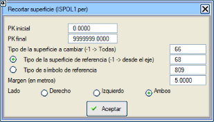
|
Yarma/Dolgu Ayır
|
Bir
veri yüzeyi S ve bir referans yüzeyi R'den yola çıkarak iki yeni yüzey D ve T oluşturur, öyle ki:
D: S yüzeyinin R'ye göre Yarmada olan kısmıdır.
T: S yüzeyinin R'ye göre Dolguda olan kısmıdır.
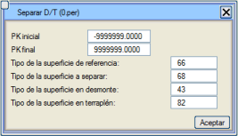
|
Eksen, X, Y, Semt
|
 Bir
enkesit dosyasına EKSEN numarasını ve her enkesitteki
X, Y koordinatlarını ve semt açısını değiştirmeyi veya eklemeyi sağlar, bu da
plan ekseninin hesaplanmış olmasını gerektirir. Bir
enkesit dosyasına EKSEN numarasını ve her enkesitteki
X, Y koordinatlarını ve semt açısını değiştirmeyi veya eklemeyi sağlar, bu da
plan ekseninin hesaplanmış olmasını gerektirir.
Bu seçenek genellikle, araziden veya diğer programlardan gelen enkesit dosyalarını
üç boyutlu bilgiye dönüştürmek için kullanılır.
Birden
fazla enkesit
dosyası seçilerek hepsi aynı anda değiştirilebilir. Bu durumda, program
bir hedef dosya adı sormayacak, doğrudan
orijinallerin üzerine yazacaktır.
|
Plan Ekseni
|
 Dışmerkezliğe
sahip eksenler için, mesafelerin başlangıcını eksenden
plan eksenine taşır. Dışmerkezliğe
sahip eksenler için, mesafelerin başlangıcını eksenden
plan eksenine taşır.
Bu seçenek, sembol içeren enkesit dosyalarıyla da çalışır.
|
Kot Uyarla
|
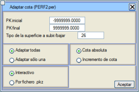Bir
veya tüm yüzeyleri, her enkesit için yeni kotu veya
eksende bir kot artışını vererek yükseltmeyi veya alçaltmayı sağlar.
Veriler, enkesit enkesit interaktif olarak veya
her satırda iki veri (KM ve kot veya KM ve kot artışı) içeren, artan KM'lerle bir .pkz dosyası aracılığıyla girilebilir.
Bu seçenek, haritadan çıkarılan bir enkesit dosyasını
eksenin bir nivelmanıyla ayarlayarak sahada kullanmayı sağlar.
|
İnterpolasyon
|
Çoklu
yüzeyli bir enkesit dosyasında, belirli bir aralıkta ve aralıkta yeni
enkesitler enterpole etmeyi sağlar. Bu seçenek üç
olasılık sunar:
- İnteraktif, tekil KM'ler.
- Başlangıç ve bitiş KM'leri ve belirli bir değerin
katları.
- .pk Dosyası ile. Bu dosya,
her satırın ilk sütununda KM'leri içermelidir.
İnteraktif seçilirse,
oluşturulmaları için farklı (artan sırada) değerler girmek mümkündür.
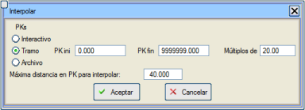
Önceki
durumlarda ve Düzenlileştir seçeneğinde olduğu gibi,
bir enterpolasyon için
maksimum mesafe istenir.
Eğer enterpole edilmek istenen enkesit, orijinal dosyanın önceki veya sonraki enkesitine
göre bu mesafeden daha uzaktaysa,
o zaman enkesit enterpole edilerek değil, en yakınına eşit olarak oluşturulur.
Ancak, yukarıdaki durum hem önceki hem de
sonraki enkesit için geçerliyse, o zaman oluşturulan enkesit ikisi arasında
enterpole edilir ve dolayısıyla etki, maksimum
enterpolasyon mesafesinin mevcut olandan büyük veya ona eşit olmasıyla aynıdır. Örneğin,
0, 100, 200, 300 enkesitlerini içeren bir dosyanız varsa ve
maksimum enterpolasyon mesafesi olarak 40 verirseniz, 120 enkesitini enterpole ettiğinizde,
bu 100'e eşit olacaktır ve benzer şekilde, 180 enkesitini enterpole etmek isterseniz,
200'e eşit olacaktır. Ancak, 155 enkesitini enterpole etmek isterseniz,
aynı maksimum mesafeyle, 100 ile 200 arasında enterpole edilmiş bir enkesit oluşturulacaktır.
Bu araç, Düzenlileştir ile birlikte,
negatif şevli arazi yüzeyleri arasında, örneğin Tünel
Takibi enkesitleri gibi, enkesitleri enterpole edebilir.
|
Kod Ekle
|
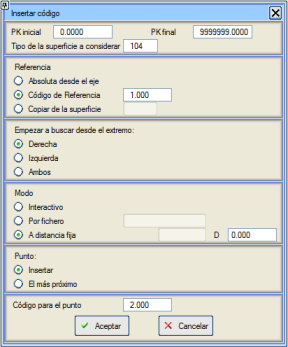Bu
seçenek, bir enkesit dosyasının bir yüzeyine, belirli bir
koda sahip başka bir noktadan başlayarak, tanımlanmış bir kodla yeni bir nokta eklemeyi sağlar.
Bir kod eklemek için öncelikle referansın Eksenden
Mutlak mı, belirli bir Referans Kodu ile mi
yoksa belirli bir yüzeyin
kodlarını Kopyalayarak mı olduğunu belirtmemiz gerekir.
Program, bir referansın sağında,
solunda
veya her iki
tarafında da arama yapmaya izin verir.
Mesafeler interaktif olarak,
enkesit enkesit, bir .pkd dosyası aracılığıyla KM'ler ve belirli noktalardaki mesafeler ile girilebilir.
Kodlar oluşturulduğunda, atanan yüzeye Eklenebilir veya en
yakına kod atanabilir.
Program, diğer KM'ler için göreceli mesafeleri enterpole eder.
İşlenecek yüzeyin kodları yoksa (arazi enkesitleri),
program referans mesafesi olarak enkesit eksenini alır
(mesafe sıfıra eşit). Ayrıca, sonunda yüzey
kodlarla birlikte .per dosyasına kaydedilir.
|
Tamamla + Uyarla
|
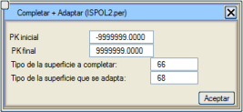İlk
yüzeyi ikinciyle tamamlar, ancak ikinciyi her yarı-enkesitte
dikey olarak kaydırarak birincinin arkasında kesintisiz devam etmesini sağlar.
Daha sonra ikinci yüzeyi siler.
|
Za-Zb Listele
|
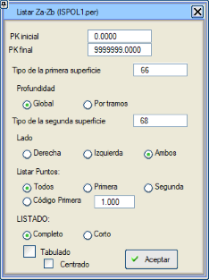Bu
seçenek, her KM için eksene olan mesafeleri ve seçilen iki yüzey arasındaki kot farklarını,
ayrıca farkların mutlak değerlerinin ağırlıklı ve birikimli ortalamasını
yazdıran bir liste (difcotas.res)
oluşturur.
Ayrıca, iki yüzeyden birinin veri içerdiği veya her ikisinin kesişim noktalarında bir nokta listelenir. Bu liste
ayrıca iki yüzey arasındaki birikmiş hacimleri de yazdırır.
Tek bir tarafı veya her ikisini de seçmek ve ayrıca KM'lere göre verilebilen birinci yüzeyden bir derinlik girmek mümkündür.
Ayrıca, birinci yüzeyin belirli bir koda sahip noktalarını da listelemek mümkündür.
Tam veya kısa liste istenip istenmediği sorulur. Kısa listede
alanlar yazdırılmaz. Tam listede, birinci yüzeyin kotu eksi derinlik ve
ikincinin kotu (hata hacimlerine ek olarak) ek olarak yazdırılır. İsteğe bağlı
olarak difcotastab.res adında sekmeli bir liste oluşturulabilir.
|
Sol-Sağ Yön Değiştir
|
Bir
enkesit dosyasının bir KM aralığında sağ tarafı solla değiştirmeyi sağlar.
Enkesitin sembolleri de ters çevrilir.
|
Düzenle 2
G/İ, genişlet
|
Genişletme ve iyileştirme için arazi
enkesitlerinde kullanılır ve şunları sağlar:
- Mevcut tesviye yüzeyini, maksimum arama mesafesinden önce keserse, araziyle kesişene (drenaj) kadar genişletmek.
- Eğer kesişim yoksa, tesviye yüzeyinin teorik
drenaj mesafesine eşit bir mesafe kadar genişletilir.
- Mevcut platform, üstyapının yanal şevini simüle ederek arazi boyunca, tesviye yüzeyini bulana kadar (eğer kesişim varsa) veya tesviye yüzeyinin ucunun dikeyine kadar uzatılır.
- Ayrıca, eğer başlangıçta mevcut platformun tamamını kaplıyorsa, iyileştirme çizgisini genişletmeye de olanak tanır.
|
Boş Olanları Kaldır
|
Bu
seçenek, bir enkesit dosyasından, hiçbir yüzeyin veri içermediği
KM'leri kaldırmayı sağlar. Bu, örneğin [Güncelle] seçeneği için bir ön işlem olarak kullanışlıdır.
|
Boş Yüzeyleri Kaldır
|
Bir
enkesit dosyasından, enkesit dosyasında tanımlanan her KM için veri içermeyen
yüzeyleri siler.
|
KM'yi Yuvarla
|
Bu
seçenek, belirli bir değerin katlarına yakın olan KM'leri,
bir toleransın dışında kalan tekil KM'leri koruyarak
yuvarlamayı sağlar.
Eğer enkesitler ISTRAM®/ISPOL®'de tanımlanmış bir eksene karşılık geliyorsa,
seçenek her enkesitin yeni X, Y ve semt açısını belirlemeye olanak tanır.
|
Öznitelikleri Kaldır
|
Enkesit
dosyasının sayısal ve alfanümerik özniteliklerini siler.
|
Sembolleri Kaldır
|
Belirli
bir sembolü veya tip olarak -1 değeri belirtilirse tüm sembolleri, belirtilen KM aralığında
ve tarafta, siler.
|
Enkesit Ekle
|
Bu
seçenek, bir enkesit dosyasına, başka bir dosyada bulunan bir yüzeyi,
hatta o dosya farklı bir eksene ait olsa bile eklemeyi sağlar.
Seçenek, GÜZERGAH PROJESİ'nin tünel kemerleri için Dal Ekle
aracı gibi çalışır, bu nedenle eklenecek yüzey negatif şevlere sahip olabilir.
Bir kullanım örneği, bir eksenle tasarlanmış bir metro tüneli durumudur,
farklı eksenlerle tanımlanmış farklı iç hatlara sahiptir.
Bu seçenekle, hatların enkesitlerine tünel kemerinin
konumunu eklemek mümkündür.
|
Enkesiti Uzat
|
Bkz.
Düzenle -
Uzat / Kırp.
|
Enkesitleri Numaralandır
|
Bu
seçenek, enkesitleri ardışık olarak veya sabit bir artışla numaralandırır.
Hem arazi enkesitleri hem de
ISPOL#.per enkesitleri
(burada # eksen numarasıdır) için kullanılabilir. Arazi enkesitlerini
numaralandırma durumunda, numara daha sonra eksen hesaplamasından sonra
ISPOL#.per dosyasında
kalacaktır
ve hesaplama ile enterpole edilen enkesitler numarasız kalacaktır.
|
Yüzeyi Kodla
|
Bu
seçenek, bir enkesit dosyasının bir yüzeyini,
bir noktadan (0 eksen) başlayarak belirli bir kodla ve ardışık
noktalar için bir kod değeri artışıyla kodlamayı sağlar.
|
Verileri Düzenle
|
Bu
aracın en basit kullanımı, her enkesitin KM'sini değiştirmektir,
ancak bu seçenek ayrıca, veri
tablosu ile, bir enkesit dosyasına eklenmiş bilgileri düzenlemek için tasarlanmıştır.
Bu bilgi, enkesitlerde hücreler olarak bulunur. Her
hücre bir başlık ve bir değer içerir (örneğin, C31).
TÜNEL TAKİBİ
modülünün Veri Ekle
seçeneği, enkesitlere bu tür verileri eklemeyi sağlar.
Enkesit verilerini gösteren tablo için değişiklikler içeren bir csv dosyası yükleme seçeneğimiz var.
Dosyanın, alanları ; ile ayrılmış bir csv olması zorunludur.
Ayrıca, csv dosyasında birinci sütunda saklanan verinin (enkesitin KM'si),
gerekli olması durumunda tam sayı kısmını ondalık kısımdan ayırmak için yalnızca bir . içerebilir,
yani KM'yi biçimlendirmek için virgül veya nokta kabul edilmez,
sadece tam sayı kısmını ondalık kısımdan ayırmak gerektiğinde bir . kabul edilir.
|
KM'ye Göre Sil
|
Bir enkesit dosyasından bir
veya daha fazla KM aralığını silmeyi sağlar.
Dosyaya
Göre .pk
kutucuğunu etkinleştirerek, enkesitleri bu uzantıya sahip bir dosya aracılığıyla silmeye olanak tanır.
Bu dosyada, ilk sütunda KM'ler görünmelidir. Bunlar sıralı olmayabilir.
|
Filtrele
|
Bir kot toleransına göre tüm enkesitlerin tüm yüzeylerindeki
hizalanmış noktaları siler.
|
| Katlar |
Bu
seçenek, bir enkesit dosyasından belirli bir değerin katlarını
(ayrıca ilk ve sonuncuyu) çıkarmayı sağlar.
|
Üstündekiler /
Altındakiler
|
Bir
yüzeyden, başka bir referans yüzeyin üstünde veya altında kalan
noktaları silmeyi sağlar.
Aşağıdaki örnekte, yatay bir çizgi bir tünel takibi enkesitlerinde
bir karşılaştırma düzlemi işaretler. Üstündekiler
işlemi, şekilde görülebileceği gibi tünelin üst kısmını siler:
|
| Yüzeylerin
Kesişimi |
Bu
araç, ilgili bir veya iki yüzeyde, ikisi arasındaki
kesişim noktalarını oluşturmayı ve her yüzeyde onlara önceden belirlenmiş bir
kod atamayı sağlar.
|
Tekrarlanan Yüzeyleri Birleştir
|
Bu
araç, aynı
yüzeyleri içeren iki enkesit dosyası birleştirildiğinde ve her KM'de yüzey ve onun tekrarı, eksene olan mesafe aralığında farklı bir alanı
kapsayabildiğinde kullanışlıdır. O zaman
program her KM'de her yüzeyi, tekrarlarıyla tamamlar.
|
Tamamla
+ Eğim
|
İki
yüzey, birincisini ikinciyle tamamlayarak elde edilen yeni bir yüzeyle
değiştirilir, ancak birincinin uçlarından, ikinciye ulaşana kadar
tanımlanmış eğimle yükselir/alçalır.
|
Tüneli
Tamamla
|
Bu
aracı,
doğal zeminde kazı veya bir püskürtme beton yüzeyi gibi açık bir tünel takip yüzeyini,
taban olarak alınmış başka bir yüzeye karşı tamamlamak için
kullanabiliriz.
Eğer her iki yüzey kesişmezse, ucundan kendi eğimiyle uzatılır.
|
.xyz'den Sembol Ekle
|
ISPOL.per
tipi bir dosyaya (veya bir eksen içeren başka bir dosyaya), bir .xyz dosyasında tanımlanmış noktaları,
iki arama mesafesi vererek eklemeyi sağlar: biri enkesitin KM'sine, diğeri eksene.
|
İki Yüzeyi Kapat
| Bu seçenek, her enkesitte daha kısa olan yüzeyin ucunu, daha uzun olanın ucunda kapatacak şekilde uzatır.
Bu seçenek içinde ayrıca [ ] Kapalı yüzey oluştur seçeneği de vardır.
Bu seçenek, şevli olarak oluşturulmuş olabilecek iki
açık yüzeyden yeni bir kapalı yüzey oluşturur.
|
Yüzeylerle İşlemler
|
Kübaj
Tablolarının Fonksiyon 1'indeki tüm işlemleri,
yeni yüzeyler oluşturmak veya mevcut birini değiştirmek için kullanma
imkanı.
|
| Kapalı
Yüzeyi Ayrıştır |
Bu
işlev, kapalı yüzeyleri (örneğin, kapalı üçgenlenmiş cisimler üzerinde şevli enkesitleri kesme algoritması tarafından oluşturulanlar), taban ve kapak olmak üzere iki yüzeye ayırmayı sağlar.
|
Parapet/Korkuluk Bul
|
Bu araç, bir enkesit dosyasındaki parapetleri/korkulukları tanımlamayı ve bunları belirli sembollerle etiketlemeyi sağlar.
İçinde, sembolleri doğrudan .per dosyasına çizmek veya parapetlerin/korkulukların uçlarını birleştiren çizgiler oluşturarak Kübaj Hesabı aracını kullanabilmek gibi belirli seçenekler bulunur.
|
Sondajların Enkesitlere
Projeksiyonu
[Sondajlar]
düğmesine tıklandığında, .per dosyasının adı,
sondaj
dosyasının .sdo adı istenir
ve aralıklara bölmeye ve enkesite arama mesafesini (varsayılan olarak 10 m) belirtmeye olanak tanıyan bir iletişim kutusu açılır.
Böylece, sondajların enkesitler
üzerindeki projeksiyonlarını içeren yeni bir enkesit dosyası elde edilir.
Mesafe,
ilerleme yönünde düzlemin arkasındaki noktalar için pozitif ve
düzlemin önündeki mesafeler için negatif olarak her nokta için yansıtılır.
Bu mesafeleri etiketlemek için etiketler kullanılır.
Sondajın noktalarından birinin
arama yarıçapı içine düşmesi, hepsinin enkesit
düzlemine yansıtılması için yeterlidir.
Aynı sondajın
noktaları,
enkesitten ilk kez geçildiğinde L100 tipi bir çizgiyle birleştirilmiş olarak
sunulur. Bir sonraki seferde çizgi artık görünmez, çünkü sondajı yansıtan işlev tarafından oluşturulur.
3B Görünüm modunda,
sondajlar, enkesite olan mesafelerine göre gerçek konumlarında çizilmiş olarak
görünür. Sondajın ağzı için sembol
S75'tir, geri kalanı
.sdo dosyasının kodlarına
bağlıdır.
Kütüphaneye S76, S77, S78 ve S79 sembolleri ve \TRABAJO\DEMO klasöründe bir .sdo örnek dosyası
dahil edilmiştir.
Düzenleme ekranında, jeolojik kontaklar, katmanlar, faylar ve kesitte
ilgi çeken tüm yüzeyler, sondajların izi görüntülenirken interaktif olarak düzenlenebilir.
Kübaj Tabloları (.dar)
Bu
araca erişmek için enkesit editörünün [KÜBAJ
TABLOLARI] alt menüsü kullanılır. Bu, kübaj tabloları tanımlamayı ve
bu tablolara göre enkesitler üzerinde ölçümler yapmayı sağlar.
|
ISTRAM®/ISPOL®'ün
GÜZERGAH PROJESİ projelerinde yaptığı ölçümler, varsayılan olarak lib
klasöründe bulunan ve ISPOL4.dar olarak adlandırılan bir tabloyu
takip eder.
Alan tanım tablolarının diğer örnekleri
aynı kütüphanede bulunur. |
|
Hesaplamadaki öncelik sırası
şöyledir:
- Eğer projenin tanımlanmış bir kübaj tablosu varsa, bu tüm eksenler için geçerlidir.
- Eğer proje için bir kübaj tablosu yoksa ama grup için varsa, bu grubun tüm eksenleri için geçerlidir.
- Üçüncü olarak, her eksen için özel olarak BOYKESİT menüsünde tanımlanan kullanılır.
- Üçünden hiçbiri yoksa, varsayılan tablolar kullanılır (ISPOL4.dar, ...)
|
Kübaj Tablolarının Tanımlanması
Bir kübaj tablosu, ölçülecek bir dizi alanı ve her bir alanın nasıl hesaplanacağına dair adımları tanımlar. Her alan, iki A ve B yüzeyi arasındaki yarma veya dolgu olabilir. A ve B yüzeyleri doğrudan dosyadan çıkarılabilir veya sırayla, başka iki yüzeyin işlenmesiyle elde edilen sonuç olabilir, öyle ki:
A =
f(A1,A2), B = f(B1,B2)
burada A1, A2, B1 ve B2, kübajı yapılacak dosyada bulunan yüzeylerdir. Ayrıca, bu şekilde ölçülen alana, önceden hesaplanmış başka bir alanın değeri eklenebilir veya çıkarılabilir.
Sağ üst kısımda şu simgeler bulunur:
Yeni .dar tablosu
.dar tablosu yükle
.dar tablosu kaydet
.dar tablosunu ikinci veya üçüncü kütüphaneye kaydet
Bu tablolardan birinin tipik yapısı, Alanları
Tanımla bölümünde birkaç sütundan oluşur:
- İkinci sütun, enkesit üzerinde ölçülen alanın adını
belirler ve 20 karaktere kadar içerebilir. Bu, listelerde ve
enkesit paftalarında kullanılan addır. Eğer
“<” ve “>” karakterleri
arasına yazılırsa, alan hesaplanır ancak
listelerde veya enkesitlerde görünmez.
Eğer ad olarak
“<s>” yazılırsa,
o zaman yapılan şey, tipi B1'de belirtilecek olan yeni bir geçici yüzey
oluşturmaktır (zaten tanımlı bir tipi kullanmamak için yüksek
değerler koymak tavsiye edilir). Oluşturulacak yüzey tipi olarak, numarasını yeniden kullanmak için daha önce oluşturulmuş bir yüzey verilebilir.
Ayrıca, orijinal dosyada mevcut bir yüzey belirtilirse, bu son dosyada değiştirilecektir, bu da
.dar tablolarını enkesit
dosyalarını değiştirmek için komut dosyaları olarak kullanmayı sağlar.
Eğer B2'de bir yüzey belirtilirse, ayrıca
program, mevcut enkesitte A1 yoksa, bu yeni yüzeyi oluşturmak için
alternatif olarak B2'yi kullanmasını belirtir.
<s> ile tanımlanan bu tür yüzeyler
.dar dosyasında saklanır.
Eğer yardımcı yüzeyimizi <S>
komutlarıyla tanımlarsak, program bu yardımcı yüzeyi oluşturacak ve biz bunu
bu komutu içeren kübaj tablosuyla enkesit dosyasını kübajladıktan sonra
enkesit editöründe kontrol edebileceğiz.
- YDTK
aşağıdaki değerleri alabilir:
Y
|
Yarma
alanı dikkate alınır. |
D
|
Dolgu
alanı dikkate alınır. |
K
|
Kapalı
bir çizginin alanını ölçmek için (genellikle tünel kesitleri için kullanılır). |
A
|
Önceki
alanların toplamı (A1+A2+B1+B2). +/- A sütunu da kullanılırsa, 5 alana kadar toplam bir alan elde edilebilir. |
R
|
(A1+A2)
/ (B1+B2) oranını hesaplar. |
I
|
Bir
yüzeyin alanını
başka birinin içinden ölçmeyi sağlar (I). Programın bir tünel takibi hesaplaması yaparken oluşturduğu
tabloda görülebilir.
İki A ve B yüzeyi, aynı veri satırında veya daha önceki satırlarda Ufuk
fonksiyonu ile kapatılabilir, bunu aşağıda açıklayacağız.
|
L
|
BIM modelinde,
.dar tablosunda enkesitte uzunluk olarak (L) tanımlanan ölçümler
yüzeyler (cisimler değil) olarak oluşturulur. Örnek: ISPOL4.dar tablosundaki SUP_DESMONTE.
|
di
|
Alan:
A alanının dışı / B alanının içi. di, id, ii, dd modları, örneğin
bir trenin gabari hattı ile tünelin havalandırma, peronlar, personel,
kaplama gibi diğer elemanları arasındaki etkileşimi analiz etmek için kullanışlıdır.
|
id
|
Alan:
A alanının içi / B alanının dışı.
|
ii
|
Alan:
A alanının içi / B alanının içi.
|
dd
|
Alan:
A ve B alanlarının zarfı.
|
- Fonksiyon,
sırasıyla A yüzeyini ve B yüzeyini elde etmek için yapılacak işlemdir.
Bu değişken aşağıdaki değerleri alabilir:
1
Yüzey
|
A, A1
yüzeyidir. |
+
Düşük
|
A, A1 ve A2 arasındaki en düşük olandır. |
+
Yüksek
|
A, A1 ve A2 arasındaki en yüksek olandır. |
Kırp
|
A, A2 ile kırpılmış A1'dir. |
Tamamla
|
A, A2 ile tamamlanmış A1'dir.
|
.per
Numarası
|
O yüzeyin enkesit dosyasındaki sıra numarası. |
Kod.
Kırp
|
A1
yüzeyini, A2'de belirtilen koddan içe doğru
kübajlamayı sağlar. |
Kod.
Kırp 2
|
A1
yüzeyini, A2'de belirtilen koddan dışa doğru
kübajlamayı sağlar. |
Önceki
|
Sadece
ikinci işlev için geçerlidir,
B yüzeyinin, enkesit dosyasında
A1 yüzeyinin hemen önündeki yüzey olmasını sağlar. |
Alanlar
|
YDTK,
A veya R olduğunda, tablonun önceki bir satırında hesaplanmış bir alan
verisine referans verir.
|
Uzat
|
A1'i
A2 ile uzatır, A1 yüzeyinin uçlarını yatay olarak A2'nin
kenarlarına kadar uzatır. |
Ufuk
|
Bu seçenek,
tünel takip yüzeylerini karşılaştırma düzlemi yüzeyine göre
kırpmak veya uzatmak için kullanılır. Tünel takibi menüsünde bir hesaplama yapıldığında oluşturulan
seg_tun.dar
tablosunda görülebilir.
|
x Altında
|
Sonuç yüzeyi, sadece
birinci yüzeyin ikinci yüzeyin altında kalan kısmıdır.
|
x Üstünde
|
Sonuç yüzeyi,
sadece
birinci yüzeyin ikinci yüzeyin üzerinde kalan kısmıdır.
|
Uzat/Kırp
|
A1
(B1) yüzeyini, A2 (B2) yüzeyini referans olarak kullanarak,
kendi eğimiyle, her iki taraftan ve birkaç
segmenti analiz ederek uzatır veya kırpar.
|
Filtrele A2/10000 veya Filtrele
B2/10000
|
A1
(B1) yüzeyini, eksene olan mesafesi ve kotu, A2 (B2) cinsinden milimetrenin onda biri olarak ifade edilen bir
mesafeden daha az olan noktaları silerek filtreler.
|
Tipi Değiştir
|
Yüzeyin
tipini
değiştirmeyi sağlar. A1'e değiştirilecek yüzeyi ve A2'ye A1'in yerine geçecek yeni
yüzeyi yerleştiririz.
Örn: 67 numaralı yüzeyin tipini 1067'ye değiştirme:
Ad [<s>], FonksiyonA [Tipi Değiştir], A1 [67] ve A2
[1067].
|
Sil
|
A1 sütununa yerleştirilen
yüzeyi siler.
Örn: 68 numaralı yüzeyi silme:
Ad [<s>], FonksiyonA [Sil], A1 [68].
|
Kazılmış
|
Kapalı
A1 yüzeyinin, A2 yüzeyinin altında kalan kısmıdır.
Örn. F1= Kazılmış , A1=390, A2=66
Kütüphanemizde, son satırlardaki bazı ölçümlerde kazılmış işlevini kullanan ISPOL4_ZM.dar tablosu bulunmaktadır: Önce
duvarların topraktaki kazısı ölçülür. Sonra bu
ölçüm topraktaki yarma kazısından çıkarılır ve
duvar temellerinin kazısına eklenir.
|
| Yatay+YarıGenişlik | Kırmızı kot'a göre dikey bir mesafeden başlayarak, belirttiğimiz yarı genişlikte yeni bir yatay yüzey oluşturur. |
En Düşük Tamamlanmış
|
İki yüzeyin en
düşüğü, daha sonra her iki yüzeyle tamamlanmıştır.
|
En Yüksek Tamamlanmış
|
İki yüzeyin en yükseği, daha sonra her iki yüzeyle tamamlanmıştır. |
Çıkar
|
Çıkar(A1,A2):
A2 yüzeyinin tüm noktaları A1 üzerinde olmalıdır. A1'den, A2 ile çakıştığı bölge silinir.
|
Deverli+YarıGenişlik
|
Yatay+YarıGenişlik'e
benzer, ancak oluşturulan çizgi, her iki taraftaki 1 ve 2 kodları arasında mevcut olan deveri devralır.
|
Sulama(Kapak,Taban)
|
Tapa
yüzeyinin, Taban yüzeyi üzerinde kalınlığı olan kısmını,
8:1'den daha düşük bir şeve (eğim %12.5'ten büyük) sahip bölgeler hariç olmak üzere,
döndürür.
|
x Altında veya Eşit
|
Sonuç
yüzeyi,
birinci yüzeyin ikinci yüzeyin altında kalan kısmıdır.
|
x Üstünde veya Eşit
|
Sonuç yüzeyi, birinci
yüzeyin ikinci yüzeyin üzerinde kalan kısmıdır. |
Bölgeyi Hariç Tut
|
Yüzey
1'in, yüzey 2'nin bulunmadığı kısmını döndürür.
|
Tamamla veya Hiçbir Şey
|
Eğer
her iki yüzey de varsa, Tamamla gibidir. Eğer yüzeylerden biri yoksa,
hiçbir şey yapmaz.
|
En Düşük veya A1
|
A1 ve A2 yüzeylerinin en
düşüğünü döndürür. A2'nin bulunmadığı bölgelerde, A1
yüzeyini döndürür.
Yüzey kapalı olduğunda: eğer her iki yüzey de varsa, +Düşük gibi çalışır.
Eğer sadece birincisi
kapalı olarak varsa, bu yüzeyi döndürür, eğer sadece ikincisi varsa,
hiçbir şey döndürmez.
|
En Yüksek veya A1
|
A1 ve A2 yüzeylerinin en
yükseğini döndürür. A2'nin bulunmadığı bölgelerde, A1
yüzeyini döndürür.
Yüzey kapalı olduğunda: eğer her iki yüzey de varsa, +Yüksek gibi çalışır.
Eğer sadece birincisi
kapalı olarak varsa, bu yüzeyi döndürür, eğer sadece ikincisi varsa,
hiçbir şey döndürmez.
|
Katı Kod Kırpma
|
Tüm
noktaların kodlanmış olmasını veya kodların sıralı olmasını
gerektirmez, hatta tanımlanan kod her yarı-enkesitte birkaç kez
tekrarlanabilir. Katı_kod_kırpma, kod görünene kadar noktaları kopyalamaya
başlar, sonraki noktalar kod tekrar görünene kadar dahil edilmez...
|
Katı Kod2 Kırpma
|
Tüm
noktaların kodlanmış olmasını veya kodların sıralı olmasını
gerektirmez, hatta tanımlanan kod her yarı-enkesitte birkaç kez
tekrarlanabilir. Katı_Kod2_kırpma, kod görünene kadar noktaları dahil etmeden
başlar, sonra onları eklemeye başlar ve kod tekrar görünene kadar devam eder,...
|
| Kodla | Birinci yüzeyin (A1 veya B1) noktalarına, ikinci yüzeyden (A2 veya B2) türetilen kodları koyar. | | di / id / ii / dd | Dış-iç,
iç-dış, iç-iç,
zarf değerleri de yüzeyler arasında F1/F2 fonksiyonları olarak kullanılabilir. |
Kapalı Alan Ekseni
|
A1 verisi olarak kapalı bir
alan verildiğinde, alanın bir uç noktasından ağırlık merkezine ve oradan diğer uç noktasına giden bir yay oluşturur.
Bu fonksiyonun amacı, bir
tüneldeki bir oyuğun teorik yüzeyini temsil etmektir.
|
- A1,
A2,
B1
ve B2,
onları temsil eden çizgi tipiyle tanımlanan yüzeylerdir. Fareyi bu kutucukların üzerine getirdiğimizde,
onları hızlıca tanımak için enkesitteki çizgiler (veya
alanlar) vurgulanacaktır.
- +/- A,
daha önce tanımlanmış ve hesaplanmış bir alanı
eklemeyi veya çıkarmayı mümkün kılar. Örneğin, -5 değeri, tablonun 5. verisinde elde edilen alanın çıkarılacağını gösterir.
Açıkçası, bu değer sadece tablonun 5. verisinden sonraki verilerde görünebilir.
ELDE EDİLEN ALANLARA UYGULANACAK FAKTÖRLER
- Oran (Ratio): Bu
değeri, hesaplandıktan hemen sonra alana
çarpar, bu nedenle bu alan daha sonraki bir alanda yer alıyorsa,
zaten bu orandan etkilenmiş olur.
- Katsayı:
Bu değeri, tüm alanlar hesaplandıktan
sonra alana çarpar, bu nedenle alan daha sonraki bir alanda yer alıyorsa,
bu katsayıdan ETKİLENMEZ. Hem bu değer hem de önceki,
cvol.res
ve cv.res listelerinin sonuçlarını değiştirir.
- Kütleler Diyagramı:
Bir kütleler diyagramı elde etmek için bir
sıkışma veya kabarma değeri tanımlamayı sağlar. Bu seçeneği tanımlamak için dört ondalık basamağa izin verilir.
0'dan farklı bir değere sahip olan yüzeyler
KÜTLELER DİYAGRAMINDA kübajı yapılacaktır. Bu değer,
cvol.res ve cv.res dosyalarında elde edilen sonuçları DEĞİŞTİRMEZ.
Örnek
Aşağıdaki ölçümler verildiğinde:
| ALAN A |
A
|
OranA |
KatsayıA |
| ALAN B |
B
|
OranB |
KatsayıB |
| ALAN C |
A
+ B
|
OranC |
KatsayıC |
Elde edilen ölçümler şöyle olacaktır:
A = A
× OranA × KatsayıA
B = B
× OranB
× KatsayıB
C = [(A
× OranA)
+ (B × OranB)]
× OranC
× KatsayıC
- Sanat Yapısı (Ypı):
Aşağıdaki değerleri alabilir:
- Evet: Sanat yapıları veya yarı-yapılar durumunda, sadece
bu özelliğe sahip bileşenler ölçülür (örneğin, yapıların üstyapı katmanları için uygundur).
- Hayır: Bu ölçüm, sanat yapıları veya yarı-yapılar durumunda asla yapılmaz.
- Sadece: Ölçüm, yalnızca sanat yapıları durumunda gerçekleştirilecektir.
- Boru Hatları:
Karayolları, demiryolları veya boru hatları gibi her türlü proje için tek bir tablo oluşturmayı sağlar (ISPOL4.dar) ve aşağıdaki değerleri kabul eder:
- Hayır:
Bu ölçüm bir boru hattı kesitinde ölçülmeyecektir. Örneğin ÜSTYAPI.
- Evet:
Bu ölçüm bir boru hattı kesitinde ölçülür. Örneğin DOLGU.
- Sadece
gömülü: Ölçüm sadece gömülü boru hatları durumunda, mesnetli olmayanlarda. Örneğin Koruma dolguları.
- Sadece:
Ölçüm sadece boru hattı kesitlerine uygulanabilir. Örneğin BORU ölçümü.
 Geoteknik Malzeme:
Eğer bu kutucukta Evet seçeneği tanımlanırsa, bu ölçümün
bir geoteknik malzemeye (örneğin, uygun olmayan zemin, bitkisel toprak, toprak veya kaya yarması,...) karşılık geldiği belirtilir. Bu, programın diğer bölümlerinde, örneğin
GÜZERGAH PROJESİ'nin HESAP BÖLGELERİ'nde,
toprak işleri ölçümlerinde dikkate alınıp alınmayacağını ayırt etmeyi sağlar. Isdim seçeneği
sondaj tablosunu etkilemez, ancak Isdim tarafından dikkate alınacak kazılmış malzemelerdir:
tünel kazısı, iyileştirme kazısı, duvar temeli kazısı, ... Geoteknik Malzeme:
Eğer bu kutucukta Evet seçeneği tanımlanırsa, bu ölçümün
bir geoteknik malzemeye (örneğin, uygun olmayan zemin, bitkisel toprak, toprak veya kaya yarması,...) karşılık geldiği belirtilir. Bu, programın diğer bölümlerinde, örneğin
GÜZERGAH PROJESİ'nin HESAP BÖLGELERİ'nde,
toprak işleri ölçümlerinde dikkate alınıp alınmayacağını ayırt etmeyi sağlar. Isdim seçeneği
sondaj tablosunu etkilemez, ancak Isdim tarafından dikkate alınacak kazılmış malzemelerdir:
tünel kazısı, iyileştirme kazısı, duvar temeli kazısı, ...
Veri menüsünün diğer seçenekleri şunlardır:
| [Ekle] |
Yeni bir kübaj komut satırı ekler.
|
| [Tekrarla] |
İlk satırda görünenin önüne, aynı verilerle tanımlanmış bir alan ekler.
|
| [Sil] |
İlk satırda tanımlanan alanı siler.
|
| KM'ye
göre kübaj / Ağırlık merkezine göre
kübaj |
İki
olası kübaj modu arasında geçiş yapar: alanların ortalamasının enkesitler arasındaki mesafe ile çarpılması veya bu mesafenin, ağırlık merkezlerinin plan eksenine göre dışmerkezliği kullanılarak ağırlıklandırılması.
|
Ortalama Alanlar Yöntemiyle / Prizmatoid Yöntemiyle Kübaj
|
Kısmi hacimler için iki kübaj yöntemi arasında geçiş yapar: alanların ortalaması veya prizmatoidler.
|
| .dar'a Kaydet |
Bu kutucuk, Ağırlık merkezine
göre kübaj seçeneği de
etkinleştirilmişken etkinleştirilirse, bu tercih tablonun
kendisine kaydedilir.
|
| Sadece
pozitifleri topla / Hepsini
topla |
İlgili
kutucuğu etkinleştirerek, sadece
pozitif değerlere sahip alanlar (Sadece pozitifleri
topla), gerçek
fiziksel anlamda dikkate alınabilir veya tüm sonuçlar -negatifler dahil- (Hepsini topla) seçeneğiyle dikkate alınabilir.
|
|
Aralıklara göre kübaj |
Kutucuk etkinleştirildiğinde,
pencerenin alt kısmında, kübajı yapılacak KM'lerle tanımlanmış
aralıkları eklemek, araya eklemek veya silmek için bir alan
açılır:
Aralıklara göre kübaj yapılması durumunda, cvol.res dosyasının sonuna
aralıklara göre ölçümlerin bir özet tablosu eklenir.
|
Hacimlere göre kübaj
|
Bu seçenek,
kot ve eksen mesafesi için ayrık aralıklar tanımlamayı sağlar. Her
kot ve mesafe aralığı için, kullanıcının tanımladığı bir alt klasörde bir çift liste (biri cvol.res tarzında, diğeri cv.res tarzında) oluşturulur.
Dosyaların adı aralığa referans verir. Örneğin: cv-0025+0020.res, tabanı -25m kotunda ve sol kenarı eksenin 20m sağında olan hacimlerin cv.res tarzı dosyasıdır. Hesaplama, sağ menüdeki Kübaj komutu ile yapılır.
Kullanıcının seçtiği klasörde toplam hacimlerin bir özetini içeren bir cvoltot.res listesi oluşturulur.
Listeler klasörüne bir erişimimiz var.
Hacimlere göre kübaj raporunu Excel formatında dışa aktarmak mümkündür.
Bunun için alan tanım penceresinde hangi ölçümlerin listeleneceğini işaretleriz, seviye ve
mesafe aralıklarını belirleriz ve Excel dosyası oluşturma bayrağını etkinleştiririz.
Kübaj yürütüldüğünde, kübaj listeleri için tanımlanan klasörde cubicacion.xlsx dosyası oluşturulur.
|
Seviyelere göre kübaj
|
Seviyelere
göre kübajda,
maksimum ve minimum kot arasında bir aralık tanımlanmasına izin verilir.
Sonunda her seviye için özetler ve bir toplam özet içeren bir liste oluşturulur ve gösterilir.
|
Enkesitteki daha küçük alanları iptal et
|
Burada
belirtilenden daha küçük değerli alanlar ölçümde dikkate alınmayacaktır.
Kübaj sırasında kullanılır,
ancak tabloya kaydedilmez.
|
Minimum aralık mesafesi
|
Bu
seçenek etkinleştirildiğinde, mesafesi girilen minimum
ayrımdan daha büyük olan iki enkesit arasındaki kısmi hacimler iptal edilir.
Eğer seçenek etkinse, bu değer
.dar dosyasına kaydedilir ve
tabloyla birlikte kullanılır.
|
| .dar dosyası, Kütüphaneye kopyala |
Eğer bu kutucuk etkinleştirilirse, bir
.dar dosyasını
belirli bir adla kaydederken, program aynı
adla birincil kütüphaneye bir kopya oluşturur.
|
| İçe Aktar | "İçe Aktar" düğmesi, belirtilen sütuna (Ad, A1, A2, B1, B2) metin dosyalarını (.txt) yükleme işlevine sahiptir.
Bu dosyaların .txt uzantısına sahip olması ve tüm değerlerinin tek bir sütunda olması gerekir.
Örneğin, A1 sütunu için bir .txt dosyasının içeriği şöyle olabilir:
4001
4005
4006
4007
4008 |
| [Yorum] |
Alan
tanım tablosuna üç satıra kadar yorum
eklemeyi sağlar. Bu yorumlar, örneğin, güzergah projesi takip aracında bir tablo seçildiğinde
gösterilir.
|
| Yüzeyler <s>, Oluştur |
Bu seçenek etkin bırakıldığında, <s> ile oluşturulan geçici yüzeyler
.per dosyasının enkesitlerinde
oluşturulur ve çizilir. |
Ekseni Kontrol Et
|
Enkesitlerin
yüzeyleri için eksen numarasını kontrol edebiliriz. Varsayılan olarak
kontrol edilir ve sadece ana eksene ait yüzeyler ve arazi yüzeyleri ile alanlar ölçülür,
çünkü bir enkesitte aynı yüzey birden fazla farklı eksen için tekrarlanabilir.
Bu kutucuğu devre dışı bırakarak, eksen numaralarını dikkate almayan bir kübaj tablosu yapılabilir.
|
Çizgi Tipleri
Bu sekmede, her ölçüme bir çizgi tipi atamaya izin verilir.
Bu çizgi tipi 0'dan farklıysa, Ölçümlerde Alanları Çiz seçeneği etkinleştirildiğinde enkesitlerin çiziminde gösterilecektir.
Eğer değer 0 ise, o zaman şunlar gösterilecektir: - L1305 Yarmalar. (Dönüşüm Faktörü > 0) - L1304 Bitkisel Toprak. (D.F.=0 olan
geoteknik malzemeler) - L1302 Dolgular (Dönüşüm Faktörü < 0) -
L1301
Kalan.
Her ölçüm için, enkesitlerde gösterimi
ve BIM nesnelerine renk vermek için bir çizgi tipimiz var.
Enkesitlerin çiziminde, Ölçümlerde: Alanları çiz'i etkinleştirdiğinizde,
bu çizgi tipleri kullanılır ve mevcut eksenin modelinde çizilir.
Sadece BIM:
Sadece
BIM'i işaretleyerek, bu ölçümün sadece BIM modeli için oluşturulduğunu ve örneğin cvol listeleri vb. için oluşturulmadığını belirtiriz.
Kübaj
tablolarındaki parametre (çizgi tipinden sonra), o
ölçümün sadece BIM modeli için oluşturulduğunu, ancak cvol listeleri vb. için oluşturulmadığını belirtmek için kullanılır.
ISPOL4.dar tablosundaki SUP_DESMONTE örneği.

- Malzeme Klasörü ve Malzeme'de,
ölçümün hangi malzemeden yapıldığı belirtilebilir.
- Malzeme'den sonraki sayı, BIM modelindeki çizgilerin sahip olacağı görünüm tipini
tanımlar:
- 0:
Köşe noktasına göre normal (yumuşatılmış), malzemeye göre doku.
- 1:
Köşe noktasına göre normal (yumuşatılmış), duvar tipi doku.
- 2:
Yüze göre normal, malzemeye göre doku.
- 3:
Yüze göre normal, duvar tipi doku.
- Disiplin
sütununda, ölçüm için bir sınıflandırma seçebiliriz (Kazı,
dolgu, üstyapı, boru, menfez vb.). Disiplinlerin adları,
iletişim kutusunun üst kısmındaki [Disiplinler]
düğmesine basılarak düzenlenebilir.
- Özellikler,
her ölçüme özel özellikler atamamızı sağlar:
- Borular ve Dirsekler olarak işaretlenmiş elemanlar,
boru ve dirsek uzunluklarına göre kesilir.
- Üstyapı Katmanı olarak işaretlenmiş elemanlar,
üstyapı hesaplama aralıklarına göre kesilir.
- Tarafları
Ayır:
ISPOL4.dar tablosunda, bazı elemanları bulundukları
platform tarafına göre ayırmayı sağlayan bir özelliğimiz var.
Revizyonda yer alan ISPOL4.dar tablosunda bu özellik bazı malzemelerde mevcuttur: Duvarlar, Duvar Filtresi, Anroşmanlar,
Duvar Temelleri, Kafa Hendekleri, Hendek Kaplamaları,
Yarma Kaplaması, Dolgu Kaplaması, Bordürler vb.
- Kübaj,
ölçümü sadece eksenin bir tarafında veya her ikisinde de yapma
imkanı sunar.
Dikey menü seçenekleri
Dikey menüde aşağıdaki seçenekler belirir:
[ARALIKLAR]
|
Başlangıç
KM'si ve bitiş KM'si ile bir dizi aralık tanımlamayı ve bu verileri bir .tdc dosyasına yüklemeyi veya kaydetmeyi sağlar.
Bir aralığın başlangıç KM'si, bir öncekinin sonuyla çakışabilir veya çakışmayabilir.
.dar tanım menüsünde,
aynı işlevi yerine getiren Aralıklara göre
kübaj seçeneği bulunur.
Bu seçenek etkinleştirildiğinde, enkesit dosyası her aralık için değerleri biriktirerek kübajı yapılır.
cvol.res listesinde,
her aralığın ölçümlerinin sonunda, o aralığın bir özeti ve dosyanın
sonunda tüm aralıkların toplamı yer alır. Herhangi bir aralığa ait olmayan enkesitler,
sahip oldukları ölçüm değerlerini değiştirmeden seçilen enkesit dosyasına
yeniden kaydedilir.
|
| [Seviyeler HAYIR] / [Seviyeler EVET] |
Minimum
ve maksimum kübaj kotu arasında, söz konusu cismin seviyelere göre kübajını yapma
imkanı sunar.
|
[Alanı
Gör]
|
Ölçülen
alanı görselleştirmeyi sağlayan kapalı bir alan oluşturur. Bunun
için, görüntülenmek istenen tablonun alan numarası istenir ve
eğer enkesit düzenleme araç çubuğundaki
seçeneği ile oluşturulmuşsa, çalışma kütüphanesinde bulunan defArea.per
dosyası açılır veya ISTRAM®/ISPOL® kütüphanesinde bulunan aynı adlı varsayılan dosya açılır.
Eğer istenen ölçüm numarası,
.dar tablosunda <s>
komutu ile tanımlanmış bir geçici yüzeyin
tanımına karşılık geliyorsa,
bu yüzey vurgulanmış olarak gösterilecektir. Eğer bu, diğer alanların
toplamları ve farklarından oluşan bir alansa, eklenenler mavi, çıkarılanlar ise gri renkte gösterilir.
Aynı etki, tablonun veri numarasına doğrudan tıklandığında da ortaya çıkar, bu da daha pratiktir.
|
[Kübaj Hesabı]
|
Bir
.per enkesit dosyası
seçmeyi ve mevcut tabloyu takip ederek bir kübaj hesabı yapmayı sağlar. Ölçümler
çıktı dosyasına yazılır ve bir
cvol.res ölçüm listesi
ve bir hesap tablosuyla açılmaya uygun sekmeli bir cv.res
listesi oluşturulur. [List] düğmeleri
bu dosyaları görüntülemeyi sağlar.
|
[Kaydet]
|
Oluşturulan
tabloyu .dar
uzantılı bir dosyaya kaydetmeyi sağlar.
|
[Yükle]
|
Daha
önce tanımlanmış bir tabloyu, .dar
uzantılı bir dosyadan geri yüklemeyi sağlar.
|
Basit bir Maden Ocağı Kübaj Örneği
Şekilde
gösterilen durumda, orijinal arazi çizgisi
her enkesitte 0 tipi çizgi (L0) ile temsil edilir,
kazı 40 numaralı çizgi (L40) ile, cevher tabakasının tavanı veya üst sınırı 107 (L107) ve tabanı veya alt sınırı 67
(L67) olarak temsil edilir.
0 yüzeyi üzerinde 40 yüzeyinin neden olduğu enkesitteki yarma alanını, yani
gerçekten kaldırılan malzeme miktarını hesaplamak için, ilgili çizginin tabloya eklenmesi gerekir
(yüzeyler hem klavyeden hem de fare ile eklenebilir):
Cevhere karşılık gelen alan
iki farklı aşamada hesaplanır:
| İlk
olarak, 107 numaralı çizgiyi 0 ile tamamlayarak tavanı tanımlanır.
Bu komut, 107'nin bulunduğu yerlerdeki noktaları alır ve bulunmadığı yerlerde
onu 0 ile tamamlar, sonuçta ortaya çıkan yüzey şekilde kalın çizgiyle gösterilir. |
|
|
Cevher
tabakasının tabanı için, 67 ile 40 arasındaki en yüksek değer alınır,
sonuç olarak her iki çizgi tipi bir arada bulunduğunda (ve sadece bu durumda) en yüksek kotlar elde edilir. |
| Öncekinin
birinci üzerinde neden olduğu yarma (çizimde taranmış) aranan alan olacaktır ve bu nedenle eklenecek satır şudur: |
|
Pasa veya gang alanını hesaplamak için,
tabloda toplam kazıdan (ilk
satırda tanımlanmış) her enkesitteki cevher alanının (ikinci satır) çıkarılacağını belirtmek yeterlidir. Bu,
önceden hesaplanmış alanların toplama/çıkarma (+/-) sütununda belirtilir.
Bu durumda, ikinci sütunda alanlar komutunu (A)
seçerken, işlem yapılacak alanlar girilir; biri satırın herhangi bir kutucuğuna, ikincisi ise
toplama/çıkarma sütununa "–" işaretiyle girilir:
Son tablo ornek.dar
olarak kaydedilecek ve sonraki kübaj hesaplamalarında, her bir
objeyi temsil eden aynı çizgi tiplerine sahip enkesit serilerine uygulanarak
kullanılabilecektir.
|